<!doctype html>
<html lang="en">
<head>
  <meta charset="utf-8">
  <meta name="viewport" content="width=device-width, initial-scale=1">
  <title>arxiv digest — 2026-06-01</title>
  <style>
:root {
  --bg: #ffffff;
  --fg: #1f2328;
  --muted: #59636e;
  --border: #d0d7de;
  --card: #f6f8fa;
  --link: #0969da;
}
body {
  max-width: 980px;
  margin: 0 auto;
  padding: 2rem 1rem 5rem;
  font-family: -apple-system, BlinkMacSystemFont, "Segoe UI", Helvetica, Arial, sans-serif;
  line-height: 1.55;
  color: var(--fg);
  background: var(--bg);
}
a { color: var(--link); }
img { max-width: 100%; height: auto; }
pre, code { background: var(--card); border-radius: 6px; }
pre { padding: 1rem; overflow-x: auto; }
blockquote { border-left: 4px solid var(--border); padding-left: 1rem; color: var(--muted); }
details { margin: 0.6rem 0; }
summary { cursor: pointer; font-weight: 600; }
.paper-figures-scroll {
  display: flex;
  gap: 1rem;
  overflow-x: auto;
  overscroll-behavior-x: contain;
  padding: 0.75rem 0.25rem 1rem;
  margin: 1rem 0 1.25rem;
  border-top: 1px solid var(--border);
  border-bottom: 1px solid var(--border);
  scroll-snap-type: x proximity;
}
.paper-figure-card {
  flex: 0 0 min(260px, 72vw);
  scroll-snap-align: start;
  background: var(--card);
  border: 1px solid var(--border);
  border-radius: 12px;
  padding: 0.55rem;
}
.paper-figure-card img {
  display: block;
  width: 100%;
  max-height: 240px;
  object-fit: contain;
  background: white;
  border-radius: 8px;
}
.paper-figure-caption {
  display: block;
  margin-top: 0.5rem;
  color: var(--muted);
  font-size: 0.85rem;
}
.figure-strip-hint {
  color: var(--muted);
  font-size: 0.9rem;
  margin-bottom: -0.3rem;
}
</style>
  <!-- MathJax: renders $...$ inline math and $$...$$ display math, plus
       \(...\) and \[...\]. Loaded from the official CDN; works offline
       once cached. Configured to skip code/pre blocks so arxiv IDs that
       look like dollar amounts don't get mangled. -->
  <script>
    window.MathJax = {
      tex: {
        inlineMath: [['$', '$'], ['\\(', '\\)']],
        displayMath: [['$$', '$$'], ['\\[', '\\]']],
        processEscapes: true,
        processEnvironments: true
      },
      options: {
        skipHtmlTags: ['script', 'noscript', 'style', 'textarea', 'pre', 'code'],
        ignoreHtmlClass: 'tex2jax_ignore',
        processHtmlClass: 'tex2jax_process'
      }
    };
  </script>
  <script id="MathJax-script" async
    src="https://cdn.jsdelivr.net/npm/mathjax@3/es5/tex-chtml.js"></script>
</head>
<body>
<header style="background-color: #333; color: white; padding: 15px; margin-bottom: 20px;">
  <h1 style="margin: 0; font-size: 24px;">
    <a href="https://ochelpan.github.io/arXiv_clean/" style="color: white; text-decoration: none;">Main</a>
  </h1>
</header>

<h1>Daily arXiv Report</h1>

<hr>
<p>
<a href="index.html">← Index</a>
 · <a href="papers_04.html">← Previous</a> · <a href="papers_06.html">Next →</a>
</p>
<hr>

<h2>Papers 81–100</h2>
<p><a id="paper-2605.31248"></a></p>
<h3 id="trainable-quantum-spectral-models-for-partial-differential-equations"><a href="http://arxiv.org/abs/2605.31248v1">Trainable Quantum Spectral Models for Partial Differential Equations</a></h3>
<p><strong>Authors:</strong> Gabriel Mejia, Eileen Kuehn, Melvin Strobl, Achim Streit<br>
<strong>Type:</strong> theory · <strong>Category:</strong> numerical methods · <strong>PDF:</strong> <a href="https://arxiv.org/pdf/2605.31248v1">https://arxiv.org/pdf/2605.31248v1</a><br>
<strong>Analysis basis:</strong> full PDF text, analyzed in chunks</p>
<div class="figure-strip-hint">↔ Scroll figures horizontally</div>
<div class="paper-figures-scroll">
<figure class="paper-figure-card">
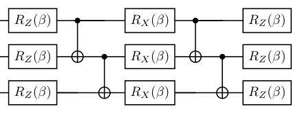
<figcaption class="paper-figure-caption"><b>Fig 1.</b> Fig. 1. Compact schematic of the richer spectral architecture Bϵ. Trainable diagonal spectral layers D(θ(ℓ)) are interleaved with forward and reverse entangling mixers, which introduce controlled coupling between spectral modes. The parameter β(ϵ) controls the mixer strength.</figcaption>
</figure>
<figure class="paper-figure-card">
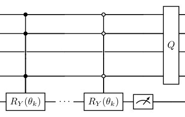
<figcaption class="paper-figure-caption"><b>Fig 2.</b> Fig. 2. HHL-inspired model. In the spectral basis, each mode |k⟩controls a sequence of ancilla rotations RY (θk). Post-selection of the ancilla induces the learned spectral filtering, followed by the inverse transform Q to recover the solution state in physical coordinates.</figcaption>
</figure>
<figure class="paper-figure-card">
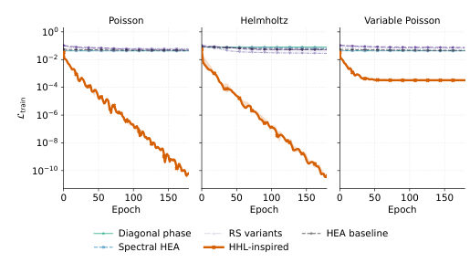
<figcaption class="paper-figure-caption"><b>Fig 3.</b> Fig. 3. Training loss evolution Ltrain = median( 1</figcaption>
</figure>
<figure class="paper-figure-card">
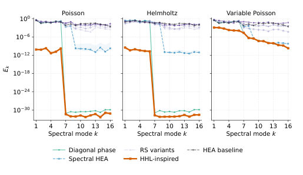
<figcaption class="paper-figure-caption"><b>Fig 4.</b> Fig. 5. Mode-wise spectral error Ek = median(|ˆuθ,k −ˆuk|2). All spectral models, except the richer spectral model with ϵ &gt; 0.5, accurately recover dominant modes and suppress spurious high-frequency components.</figcaption>
</figure>
<figure class="paper-figure-card">
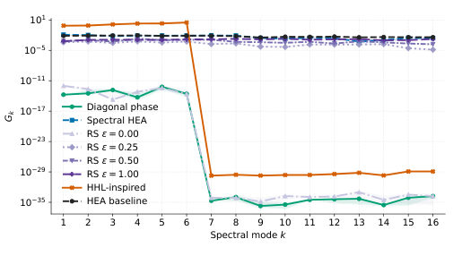
<figcaption class="paper-figure-caption"><b>Fig 5.</b> Fig. 6. Mode-wise gradient power Gk. All spectral models, except the richer spectral model with ϵ &gt; 0.5, exhibit better sensitivity on the gradients of modes of the true solution.</figcaption>
</figure>
</div>
<p><strong>Summary.</strong> This paper proposes using trainable Quantum Spectral Models (QSMs) to solve PDEs by learning the inverse operator in a spectral basis rather than the physical basis. By structuring the quantum circuit based on the PDE's natural basis, the models achieve faster convergence and higher fidelity compared to generic quantum circuits. This highlights that incorporating physical structure into quantum algorithms is crucial for practical scientific computation.</p>
<p><strong>Why it may be interesting.</strong> This work provides a structured, physically informed quantum ansatz for scientific computing, suggesting that incorporating prior knowledge (like spectral decomposition) into quantum algorithms can overcome limitations in raw expressibility.</p>
<details>
<summary>Detailed structure</summary>
<p><strong>Main problem.</strong> Developing trainable quantum spectral models (QSMs) to efficiently solve linear Partial Differential Equations (PDEs) by learning the inverse differential operator in a spectral basis.</p>
<p><strong>Main result.</strong> Operator-aware spectral representations significantly outperform generic quantum circuits, showing faster convergence and more stable gradients for solving PDEs.</p>
<p><strong>Method.</strong> The approach involves mapping the PDE problem into a spectral basis and designing parameterized quantum circuits (QSMs) that operate on this transformed representation, rather than the physical basis.</p>
<p><strong>Model / system.</strong> The models are tested on linear PDEs, including the Poisson and Helmholtz equations, and variable-coefficient versions. The quantum circuit learns the inverse operator $A^{-1}$ via a parameterized unitary $M_	heta$ acting in the spectral domain.</p>
<p><strong>Key observables.</strong> Mean Squared Error (MSE), Fidelity ($F$), mode-wise spectral error ($E_k$), gradient variance ($ ext{Var}(\partial   heta_i L)$), and convergence speed.</p>
<p><strong>Important parameters / regimes.</strong> The mixing parameter $\epsilon$ in richer spectral models, which controls the trade-off between expressibility and trainability, with an optimal regime found around $\epsilon \approx 0.5$.</p>
<p><strong>Assumptions / limitations.</strong> The performance gains are observed even when the chosen spectral basis does not perfectly diagonalize the underlying differential operator.</p>
<p><strong>Figures summary.</strong> Figures illustrate the training loss and fidelity improvements of spectral models over generic circuits, show mode-wise spectral error concentration in spectral models, and compare gradient variance across different model architectures.</p>
<p><strong>Paper structure.</strong> The paper systematically introduces QSMs, compares various architectures (diagonal, richer spectral, HHL-inspired) against HEA baselines, analyzes the expressibility vs. trainability trade-off using the mixing parameter $\epsilon$, and validates performance on multiple benchmark PDEs.</p>
</details>
<details>
<summary>Abstract</summary>
<p>This work studies trainable quantum spectral models (QSMs) for solving linear partial differential equations (PDEs). Instead of learning solutions directly in physical space, QSMs learn the inverse differential operator in a spectral representation, embedding prior knowledge of the equation's natural basis.   We systematically study the expressibility and trainability of several QSM architectures, ranging from near-diagonal to fully parameterized unitaries. In particular, we introduce a family of richer spectral models that interpolate between purely diagonal operators and fully mixing unitaries through a parameterized mixer controlled by $ε$. Our results reveal an intermediate regime, typically around $ε\approx 0.5$, where models achieve the best tradeoff between expressibility and trainability. Beyond this threshold, increased circuit complexity degrades convergence without improving accuracy.   Among the architectures considered, models inspired by the inverse step of the Harrow-Hassidim-Lloyd (HHL) algorithm achieve the fastest training convergence while maintaining high solution fidelity. Numerical experiments on the (variable-coefficient) Poisson and Helmholtz equations show that trainable operations in the spectral basis outperform standard variational quantum circuits acting directly in the computational basis. These advantages appear through faster convergence, more stable gradients, and more accurate recovery of the reference solution spectrum, particularly through stronger suppression of spurious high-frequency components, even when the operator is not exactly diagonal in the chosen spectral basis. Our results identify operator-aware spectral representations as a promising route toward trainable and physically grounded quantum methods for scientific computing.</p>
</details>
<p><sub><a href="#top">↑ back to top</a></sub></p>

<p><a id="paper-2605.30730"></a></p>
<h3 id="vertex-transitive-quantum-graphs"><a href="http://arxiv.org/abs/2605.30730v1">Vertex-transitive quantum graphs</a></h3>
<p><strong>Authors:</strong> Mac Hayes, Trevor Jess, Andre Kornell, Remi Salinas Schmeis<br>
<strong>Type:</strong> theory · <strong>Category:</strong> other · <strong>PDF:</strong> <a href="https://arxiv.org/pdf/2605.30730v1">https://arxiv.org/pdf/2605.30730v1</a><br>
<strong>Analysis basis:</strong> full PDF text, analyzed in chunks</p>
<div class="figure-strip-hint">↔ Scroll figures horizontally</div>
<div class="paper-figures-scroll">
<figure class="paper-figure-card">
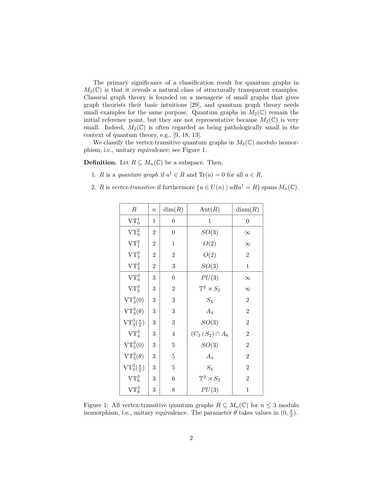
<figcaption class="paper-figure-caption"><b>Fig 1.</b> Low-resolution page preview, page 2</figcaption>
</figure>
<figure class="paper-figure-card">
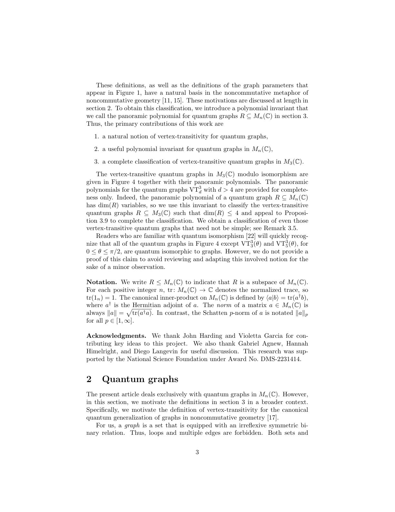
<figcaption class="paper-figure-caption"><b>Fig 2.</b> Low-resolution page preview, page 3</figcaption>
</figure>
<figure class="paper-figure-card">
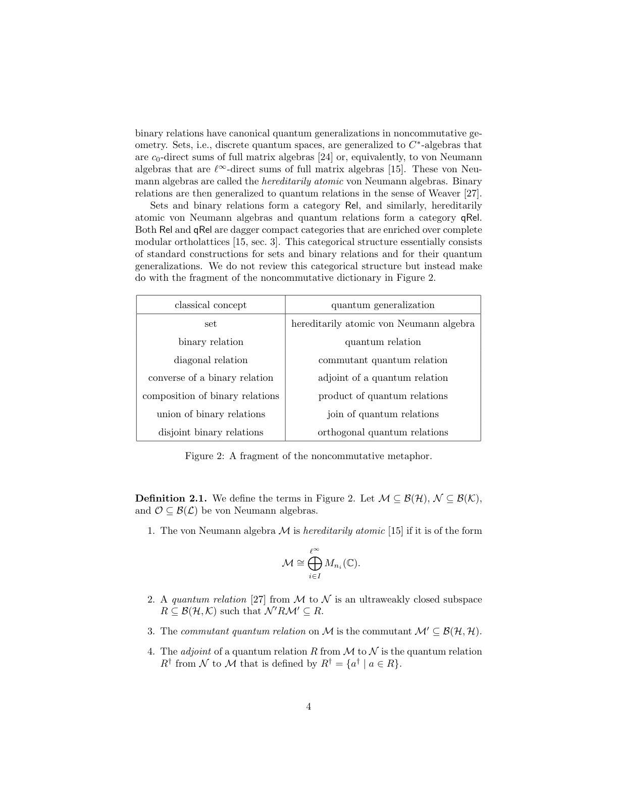
<figcaption class="paper-figure-caption"><b>Fig 3.</b> Low-resolution page preview, page 4</figcaption>
</figure>
<figure class="paper-figure-card">

<figcaption class="paper-figure-caption"><b>Fig 4.</b> Low-resolution page preview, page 5</figcaption>
</figure>
<figure class="paper-figure-card">
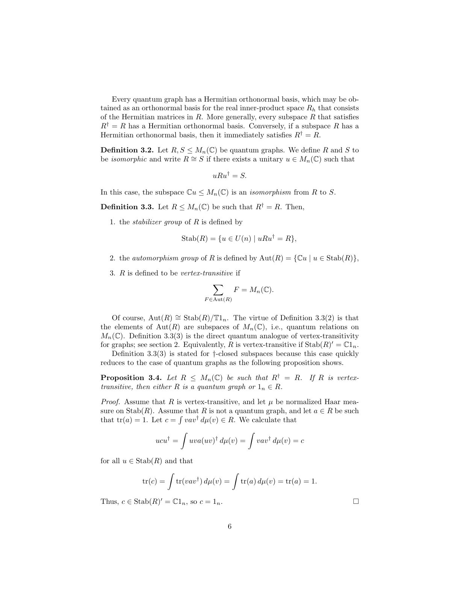
<figcaption class="paper-figure-caption"><b>Fig 5.</b> Low-resolution page preview, page 6</figcaption>
</figure>
</div>
<p><strong>Summary.</strong> This paper rigorously classifies vertex-transitive quantum graphs, which are subspaces of matrices in $M_n(\mathbb{C})$. The authors introduce the panoramic polynomial as a key invariant and use spectral analysis of the automorphism group to prove a complete, exhaustive list of all such graphs for the $M_3(\mathbb{C})$ case. This work provides deep structural insights into the symmetries of these quantum algebraic objects.</p>
<p><strong>Why it may be interesting.</strong> While the subject is abstract algebra/noncommutative geometry, the rigorous classification of highly symmetric structures (like vertex-transitive graphs) using algebraic invariants is a powerful theoretical tool applicable to characterizing symmetries in quantum physical models.</p>
<details>
<summary>Detailed structure</summary>
<p><strong>Main problem.</strong> The primary goal is to provide a complete classification of vertex-transitive quantum graphs, with a specific focus on those embedded in $M_3(\mathbb{C})$.</p>
<p><strong>Main result.</strong> The authors provide a complete classification of all vertex-transitive quantum graphs in $M_3(\mathbb{C})$ up to isomorphism, identifying several distinct families parameterized by angles $    heta$.</p>
<p><strong>Method.</strong> The classification relies on introducing and utilizing a polynomial invariant called the panoramic polynomial, alongside analyzing the spectrum of the adjoint action of unitaries in the automorphism group.</p>
<p><strong>Model / system.</strong> The system studied is the quantum graph, mathematically defined as a $\dagger$-closed subspace $R$ of matrices in $M_n(\mathbb{C})$, where $n$ is the dimension of the ambient space (primarily $n=3$).</p>
<p><strong>Key observables.</strong> The panoramic polynomial $p_R$, the automorphism group $ ext{Aut}(R)$, the dimension $   ext{dim}(R)$, and the spectrum of the adjoint action $  ext{Spec}(  ext{Ad}_R(u))$ are key observables.</p>
<p><strong>Important parameters / regimes.</strong> The dimension $n$ (especially $n=3$) and the continuous parameter $   heta \in [0, \pi/2]$ used to parameterize certain graph families are important parameters.</p>
<p><strong>Assumptions / limitations.</strong> The classification heavily assumes that the dimension of the quantum graph is an isomorphism invariant, and that the graphs under consideration are regular.</p>
<p><strong>Figures summary.</strong> Figure 4 summarizes the complete classification of vertex-transitive quantum graphs in $M_3(\mathbb{C})$ modulo isomorphism, listing 8 distinct types, each characterized by its defining elements, panoramic polynomial, and automorphism group.</p>
<p><strong>Paper structure.</strong> The paper builds from general definitions of quantum graphs and vertex-transitivity, introduces the panoramic polynomial invariant, proves structural theorems relating regularity and vertex-transitivity, and culminates in the explicit, exhaustive classification of all such graphs in $M_3(\mathbb{C})$ using spectral analysis.</p>
</details>
<details>
<summary>Abstract</summary>
<p>We define a quantum graph to be vertex-transitive if the join of its automorphism group is the maximum quantum relation on its quantum vertex set, in direct analogy with the classical case. All simple quantum graphs in $M_2(\mathbb C)$ are vertex-transitive, but many simple quantum graphs in $M_3(\mathbb C)$ are not vertex-transitive. We provide a complete classification of vertex-transitive quantum graphs in $M_3(\mathbb C)$ up to isomorphism. To do this, we introduce a polynomial invariant for quantum graphs in $M_n(\mathbb C)$, which we call the panoramic polynomial.</p>
</details>
<p><sub><a href="#top">↑ back to top</a></sub></p>
</details>
<h2 id="secondary-cond-mat-archives">Secondary cond-mat archives</h2>
<p><em>Papers from cond-mat.mtrl-sci, mes-hall, other, soft, supr-con. These archives are de-prioritized — they appear at the end regardless of relevance score.</em></p>
<h3 id="relevant-in-secondary-archives-15">Relevant in secondary archives (15)</h3>

<p><a id="paper-2605.31307"></a></p>
<h3 id="feasibility-study-of-continuous-electronic-pomeranchuk-cooling-with-a-flavor-degenerate-wigner-crystal"><a href="http://arxiv.org/abs/2605.31307v1">Feasibility study of continuous electronic Pomeranchuk cooling with a flavor-degenerate Wigner crystal</a></h3>
<p><strong>Authors:</strong> Robin J. Dolleman, Ammon Fischer, Lennart Klebl, Alexander Rothstein, Dante M. Kennes, Bernd Beschoten, Florian Libisch, Christoph Stampfer<br>
<strong>Type:</strong> theory · <strong>Category:</strong> statistical mechanics · <strong>PDF:</strong> <a href="https://arxiv.org/pdf/2605.31307v1">https://arxiv.org/pdf/2605.31307v1</a><br>
<strong>Analysis basis:</strong> full PDF text, analyzed in chunks
<strong>Topic relevance:</strong> 🔥 <code>driven-dissipative phase transition</code> <strong>4/5</strong> · <code>correlated / nonlocal dissipation</code> <strong>3/5</strong> · <code>methods for driven-dissipative</code> <strong>3/5</strong> · <code>non-equilibrium dynamics</code> <strong>3/5</strong> · <code>non-equilibrium universality</code> <strong>3/5</strong> · <code>Keldysh / 2PI / non-Gaussian methods</code> <strong>2/5</strong> · <code>analog quantum simulation</code> <strong>2/5</strong> · <code>Frenkel-Kontorova</code> <strong>1/5</strong> · <code>Kondo &amp; dissipative impurity</code> <strong>1/5</strong></p>
<div class="figure-strip-hint">↔ Scroll figures horizontally</div>
<div class="paper-figures-scroll">
<figure class="paper-figure-card">
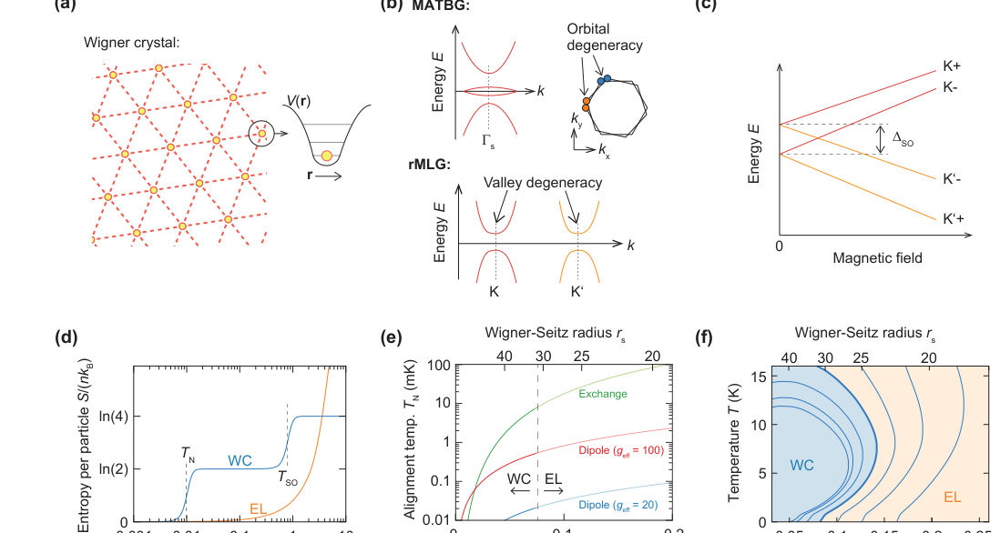
<figcaption class="paper-figure-caption"><b>Fig 1.</b> FIG. 1. (a) Illustration of the triangular lattice of charge carriers in the WC. Each charge carrier in confined within a potential created by the surrounding carriers. (b) Exemplary band structures of magic-angle twisted bilayer graphene (MATBG) and gapped rhombohedrally stacked multilayer graphene (rMLG); for two layers, rMLG corresponds to Bernal-stacked bilayer graphene. Depending on the system, each carrier can carry an orbital and/or valley degree of freedom close to the band gaps. (c) Evolution of the four lowest energy states of a confined charge carrier in a valley-degenerate system as a function of out-of-plane magnetic field (schematically). K and K′ indicate the valleys and...</figcaption>
</figure>
<figure class="paper-figure-card">
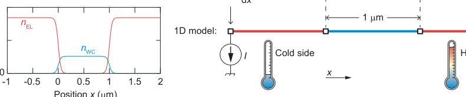
<figcaption class="paper-figure-caption"><b>Fig 2.</b> FIG. 2. (a) Sketch of the proposed thermodynamic cycle as an ideal isothermal process in the entropy–temperature diagram. (b) Schematic of the locally top-gated multilayer graphene device and the simplified one-dimensional model used for the simulations. (c) Exemplary spatial distribution of nEL and nWC that is assumed for the simulations.</figcaption>
</figure>
<figure class="paper-figure-card">
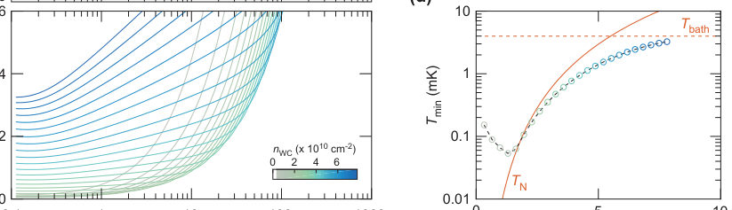
<figcaption class="paper-figure-caption"><b>Fig 3.</b> FIG. 3. Simulations to determine the minimum possible electron temperature. Fixed simulation parameters are the electrical resistivity Rs = 1 kΩ, bath temperature Tbath = 4 mK. (a) Temperature in the cold region as a function of bias current for different values of the relative Lorenz number λWC. (b) Exemplary temperature T(x) for different values of the bias current I, for the case nEL = 2.6 × 1011 cm−2, nWC = 4.88 × 1010 cm−2 and λWC = 1 × 10−6. (c) Temperature in the cold region as a function of bias current for different densities nWC in units of cm−2, assuming λWC = 1 × 10−6. (d) Minimal attainable temperature as a function of nWC.</figcaption>
</figure>
<figure class="paper-figure-card">
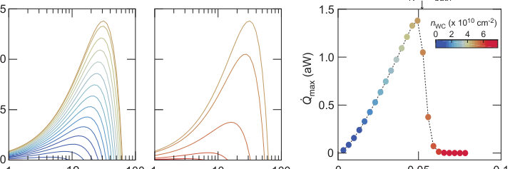
<figcaption class="paper-figure-caption"><b>Fig 4.</b> FIG. 4. Cooling power and its dependence on sheet resistance, Tbath = 4 mK and λWC = 1 × 10−6. (a) Cooling power ˙Qcool versus current for several sheet resistances Rs, the colours correspond to panel (b). Inset shows the temperature profile T(x) for currents I = 25 pA and I = 100 pA. (b) The maximum cooling power ˙Qmax as a function of Rs. (c) ˙Qcool versus current for different densities nWC (units cm−2). With increasing nWC the cooling power initially increases (left panel), reaches a maximum and then rapidly decreases (right panel). The colour scale corresponds to panel (d). (d) Maximum cooling power ˙Qmax as a function of nWC.</figcaption>
</figure>
<figure class="paper-figure-card">
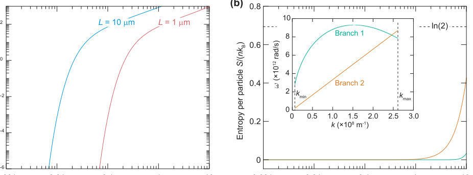
<figcaption class="paper-figure-caption"><b>Fig 5.</b> FIG. 5. (a) Relative Lorenz number λWC versus temperature for a sample lengths L = 1 µm and L = 10 µm. (b) Contribution of the phonon branches to the entropy per particle. Inset shows the two phonon branches.</figcaption>
</figure>
</div>

<p><strong>Summary.</strong> This paper proposes a novel method for continuous, on-chip electronic cooling by exploiting the large entropy difference between an Electron Liquid and a Wigner Crystal phase in 2D materials. By tuning the carrier density to induce this phase transition, heat is extracted from the electron system, potentially reaching temperatures below $1 	ext{ mK}$. The analysis uses advanced thermal transport simulations to model this non-equilibrium cooling cycle.</p>
<p><strong>Why it may be interesting.</strong> This work connects fundamental concepts of phase transitions (WC formation) and entropy maximization/minimization to a practical, non-equilibrium thermodynamic process (cooling), which is highly relevant to open quantum systems and energy dissipation studies.</p>
<details>
<summary>Detailed structure</summary>
<p><strong>Main problem.</strong> The primary challenge is achieving continuous, on-chip cooling of electron temperatures to sub-millikelvin levels in nanoelectronic devices.</p>
<p><strong>Main result.</strong> The authors propose a cooling cycle based on the entropy difference between an Electron Liquid (EL) and a Wigner Crystal (WC) phase, demonstrating potential cooling powers up to $8.4 	ext{ aW}/\mu	ext{m}$ below $1 	ext{ mK}$.</p>
<p><strong>Method.</strong> The cooling is modeled by simulating a 1D convection-diffusion equation that accounts for heat sources from Joule heating, entropic cooling ($\Delta S$), and phonon coupling.</p>
<p><strong>Model / system.</strong> The system is a 2D, flavor-degenerate material (like multilayer graphene) where the charge carriers undergo a phase transition between an EL and a WC when the local gate voltage is tuned.</p>
<p><strong>Key observables.</strong> Cooling power ($\dot{Q}_{	ext{cool}}$), minimum attainable temperature ($T_{	ext{min}}$), and the temperature profile $T(x)$.</p>
<p><strong>Important parameters / regimes.</strong> Low current densities ($< 1 	ext{ nA}/\mu	ext{m}$), WC density ($n_{WC}$), and the bath temperature ($T_{	ext{bath}}$).</p>
<p><strong>Assumptions / limitations.</strong> The cooling mechanism relies on the entropy difference ($\Delta S = S_{WC} - S_{EL}$), and the model assumes the validity of the Wiedemann-Franz relation in the EL phase while accounting for phonon backflow in the WC phase.</p>
<p><strong>Figures summary.</strong> Figures illustrate the WC lattice structure, band structures for graphene variants, the entropy difference between EL and WC, and simulation results showing the temperature profile and minimum attainable temperature.</p>
<p><strong>Paper structure.</strong> The paper establishes the physical problem, details the EL-WC phase transition mechanism driven by entropy, derives the thermodynamic cycle using the Clausius-Clapeyron relation, and finally simulates the heat transport using a 1D convection-diffusion equation.</p>
</details>
<details>
<summary>Abstract</summary>
<p>Achieving sub-millikelvin electron temperatures in nanoelectronic devices could unveil new transport phenomena, extend quantum coherence times, and enhance the precision of quantum metrology. However, maintaining such low temperatures continuously remains a long-standing challenge. Here, we propose and simulate an on-chip cooling cycle that harnesses the entropy difference between an electron liquid (EL) and a Wigner crystal (WC) in flavor-degenerate flat-band materials. Cooling is driven by a current through a device with a locally gated region. Within this region, the charge carrier density is tuned such that a WC forms beneath the gate. As carriers transition from an EL to WC phase, their entropy increases, extracting heat and the sliding WC advects this heat along the device. The heat is then released when carriers transition back to the EL phase, which establishes distinct hot and cold regions and a steady temperature gradient over the device. Simulations show net cooling for sufficiently low current densities, typically below $1~\mathrm{nA}/μ\mathrm{m}$, whereas Joule heating dominates at higher currents. Within the gated region, we estimate cooling powers of up to $8.4~\mathrm{aW}/μ\mathrm{m}$ at a bath temperature of $4~\mathrm{mK}$. Our approach can achieve electron temperatures well below $1~\mathrm{mK}$ under suitable conditions, promising a route towards continuous on-chip cooling in this temperature regime. Our approach applies to any flat-band material with low-energy flavor degeneracy (valley and/or orbital) and low disorder, including gapped Bernal-stacked bilayer graphene, rhombohedral-stacked multilayer graphene, and magic-angle twisted bilayer graphene.</p>
</details>
<p><sub><a href="#top">↑ back to top</a></sub></p>

<p><a id="paper-2605.31411"></a></p>
<h3 id="odd-parity-magnons"><a href="http://arxiv.org/abs/2605.31411v1">Odd-Parity Magnons</a></h3>
<p><strong>Authors:</strong> Pu Zhang, Sun-Bo Xie, Junxi Yu, Yichen Liu, Cheng-Cheng Liu<br>
<strong>Type:</strong> theory · <strong>Category:</strong> other · <strong>PDF:</strong> <a href="https://arxiv.org/pdf/2605.31411v1">https://arxiv.org/pdf/2605.31411v1</a><br>
<strong>Analysis basis:</strong> full PDF text, analyzed in chunks
<strong>Topic relevance:</strong> 🔥 <code>non-equilibrium dynamics</code> <strong>4/5</strong> · 🔥 <code>spintronics-quantum-optics interface</code> <strong>4/5</strong> · <code>analog quantum simulation</code> <strong>3/5</strong> · <code>driven-dissipative phase transition</code> <strong>3/5</strong> · <code>exotic spin models in light-matter</code> <strong>3/5</strong> · <code>methods for driven-dissipative</code> <strong>2/5</strong> · <code>non-equilibrium universality</code> <strong>2/5</strong> · <code>Keldysh / 2PI / non-Gaussian methods</code> <strong>1/5</strong></p>
<div class="figure-strip-hint">↔ Scroll figures horizontally</div>
<div class="paper-figures-scroll">
<figure class="paper-figure-card">
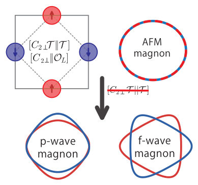
<figcaption class="paper-figure-caption"><b>Fig 1.</b> FIG. 1. Schematic of the physical mechanism for odd-parity magnons in collinear antiferromagnets. (Top) A collinear an- tiferromagnetic lattice has the joint symmetries [C2⊥T ||T ] and [C2⊥||OL] with OL = P, m, C2z, S3 3z, or C3 6z. The red and blue spheres denote the two sublattices with spin- down and spin-up polarizations, and the magnon branches are spin-degenerate. Breaking the effective time-reversal symme- try [C2⊥T ||T ], for example by circularly polarized light or loop currents, while preserving [C2⊥||OL], induces odd-parity magnon spin splitting. (Bottom) Odd-parity magnon states dictated by different lattice symmetries, illustrating the p- wave (left) and f-wave (right)...</figcaption>
</figure>
<figure class="paper-figure-card">
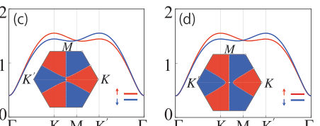
<figcaption class="paper-figure-caption"><b>Fig 2.</b> FIG. 2. Optically driven odd-parity magnon spin splitting. (a) Magnon band structure in the absence of optical driv- ing, where the two spin/chirality branches are degenerate. (b) Band structure under circularly polarized light driving. The inset highlights the f-wave odd-parity characteristics protected by the C3z symmetry. (c), (d) Evolution of the magnon bands under elliptically polarized light, where the reduced symmetry changes the splitting from an f-wave to a p-wave form. The optical field parameters are λ = 0.5 in (b), λx = 0.2, λy = 0.5 in (c), and λx = 0.5, λy = 0.2 in (d), with a driving frequency of ℏΩ/J = 1.</figcaption>
</figure>
<figure class="paper-figure-card">
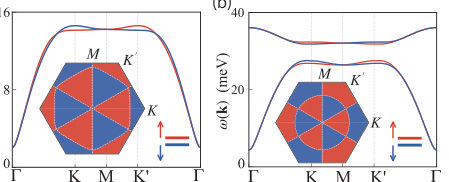
<figcaption class="paper-figure-caption"><b>Fig 3.</b> FIG. 4. Odd-parity magnon band structures of real van der Waals antiferromagnets. (a), (b) Magnon dispersions of monolayer MnPS3 and bilayer FeBr3 under optical driving with dimensionless coupling strength λ = 0.2 and frequency ℏΩ= 1 meV. The insets show the corresponding f-wave spin- splitting patterns. Results for slid bilayer CrI3 and CrVI6 are provided in the Supplemental Material.</figcaption>
</figure>
<figure class="paper-figure-card">
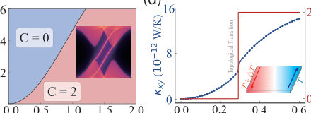
<figcaption class="paper-figure-caption"><b>Fig 4.</b> FIG. 3. Light-induced topological magnon phase transition and magnon thermal Hall effect. (a) Schematic of the bilayer A-type antiferromagnetic lattice structure featuring spatial asymmetry S1 ̸= S2. (b) f-wave magnons under circularly polarized light driving with λ = 0.4 and ℏΩ/J = 1. (c) Topological phase diagram in the plane of the optical driv- ing frequency Ωand the dimensionless coupling strength λ, illustrating the system’s evolution from a trivial phase C = 0 to a topological magnon phase C = 2. The inset shows the corresponding chiral edge states. (d) Evolution of the ther- mal Hall conductivity κxy (blue dots, left axis) with J=1 meV and T=50 K and the Chern number (red line,...</figcaption>
</figure>
</div>

<p><strong>Summary.</strong> This theoretical study establishes a general framework for odd-parity magnon splitting in antiferromagnets by classifying symmetry constraints. By applying Floquet engineering using light fields, the authors show how to induce tunable $p$- and $f$-wave magnon splittings and drive the system into a topological magnon phase. This work provides a foundation for designing ultrafast, optically controlled spintronic devices.</p>
<p><strong>Why it may be interesting.</strong> This work is highly relevant to AMO physics and open quantum systems because it uses time-periodic driving (Floquet engineering) to induce and control topological quantum states (topological magnon phases) in magnetic materials, offering a pathway for optically controlled quantum devices.</p>
<details>
<summary>Detailed structure</summary>
<p><strong>Main problem.</strong> The paper addresses the theoretical challenge of realizing and classifying odd-parity magnon band splitting in collinear antiferromagnets, a phenomenon forbidden by effective time-reversal symmetry.</p>
<p><strong>Main result.</strong> The authors provide a complete spin-point-group classification for this splitting and demonstrate that breaking time-reversal symmetry (e.g., via circularly polarized light) induces tunable $p$- and $f$-wave magnon splitting, leading to topological magnon phases.</p>
<p><strong>Method.</strong> The study employs symmetry analysis (spin-point-group classification), Floquet theory for time-periodic driving, and continuum effective Hamiltonian modeling derived from the Holstein-Primakoff transformation.</p>
<p><strong>Model / system.</strong> The research focuses on 2D collinear antiferromagnets, specifically modeling bilayer systems like $ ext{MnPS}_3$, $ ext{FeBr}_3$, and $ ext{CrI}_3$. The physics is governed by the interplay between exchange interactions and light-induced effective Dzyaloshinskii-Moriya interactions.</p>
<p><strong>Key observables.</strong> Odd-parity magnon splitting ($\Delta\omega(k)$), magnon thermal Hall conductivity ($\kappa_{xy}$), and the total Chern number ($C_{	ext{total}}$).</p>
<p><strong>Important parameters / regimes.</strong> The transition occurs at a critical light-field coupling strength ($\lambda \approx 0.3$), and the splitting patterns are classified as $p$-wave or $f$-wave.</p>
<p><strong>Assumptions / limitations.</strong> The analysis relies on truncating bulk structures to model the bilayer limit and assumes the effective time-reversal symmetry can be broken by external fields like CPL or loop currents.</p>
<p><strong>Figures summary.</strong> Figures illustrate the schematic mechanism of symmetry breaking, the resulting magnon dispersion curves showing $p$-wave or $f$-wave splitting patterns, and the topological phase transition marked by the Chern number change.</p>
<p><strong>Paper structure.</strong> The paper progresses from establishing the general symmetry constraints for odd-parity splitting (classification) to applying Floquet theory to specific lattice models (honeycomb/bilayer) to calculate the effective Hamiltonian and predict the topological phase transition via $\kappa_{xy}$ jumps.</p>
</details>
<details>
<summary>Abstract</summary>
<p>Magnons, as charge-neutral spin excitations, can transport spin information without Joule heating and therefore offer a promising platform for low-power spintronics. However, in collinear magnets, the effective time-reversal symmetry forbids odd-parity magnon band splitting. Here we propose odd-parity magnons and establish a general mechanism for realizing them in collinear antiferromagnets. We provide a complete spin-point-group classification of odd-parity magnon splitting in two-dimensional collinear antiferromagnets by identifying the leading splitting types and their symmetry-allowed basis functions. This classification serves as a practical guide for searching for odd-parity magnons. We show that breaking effective time-reversal symmetry, for example by circularly polarized light or loop currents, can induce highly tunable $p$- and $f$-wave magnon splitting. In bilayer systems, the dynamical modulation can drive a topological magnon phase transition, accompanied by chiral edge modes and an abrupt jump in the magnon thermal Hall conductivity. Material-specific first-principles calculations further demonstrate the feasibility of this mechanism in real van der Waals antiferromagnets. Our study identifies the odd-parity magnons as a new class of spin excitations and provides a theoretical foundation for odd-parity magnons and ultrafast optically controlled topological magnonic devices.</p>
</details>
<p><sub><a href="#top">↑ back to top</a></sub></p>

<p><a id="paper-2605.31467"></a></p>
<h3 id="ab-initio-spinor-kadanoff-baym-approach-to-nonequilibrium-electron-phonon-and-magnon-dynamics-in-itinerant-ferromagnets"><a href="http://arxiv.org/abs/2605.31467v1">Ab Initio Spinor Kadanoff-Baym Approach to Nonequilibrium Electron, Phonon and Magnon Dynamics in Itinerant Ferromagnets</a></h3>
<p><strong>Authors:</strong> Giovanni Marini<br>
<strong>Type:</strong> theory · <strong>Category:</strong> statistical mechanics · <strong>PDF:</strong> <a href="https://arxiv.org/pdf/2605.31467v1">https://arxiv.org/pdf/2605.31467v1</a><br>
<strong>Analysis basis:</strong> full PDF text, analyzed in chunks
<strong>Topic relevance:</strong> 🔥 <code>Keldysh / 2PI / non-Gaussian methods</code> <strong>4/5</strong> · <code>methods for driven-dissipative</code> <strong>3/5</strong> · <code>non-equilibrium dynamics</code> <strong>3/5</strong> · <code>spintronics-quantum-optics interface</code> <strong>3/5</strong> · <code>correlated / nonlocal dissipation</code> <strong>2/5</strong> · <code>driven-dissipative phase transition</code> <strong>2/5</strong> · <code>non-equilibrium universality</code> <strong>2/5</strong> · <code>exotic spin models in light-matter</code> <strong>1/5</strong></p>
<div class="figure-strip-hint">↔ Scroll figures horizontally</div>
<div class="paper-figures-scroll">
<figure class="paper-figure-card">
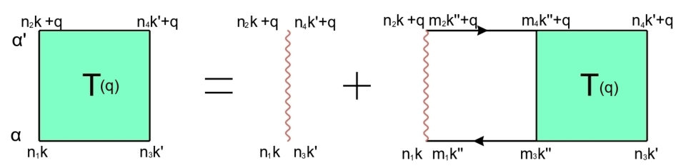
<figcaption class="paper-figure-caption"><b>Fig 1.</b> FIG. 1: Diagrammatic representation124 of the transverse particle-hole T matrix Bethe-Salpeter equation in the Bloch space.</figcaption>
</figure>
<figure class="paper-figure-card">
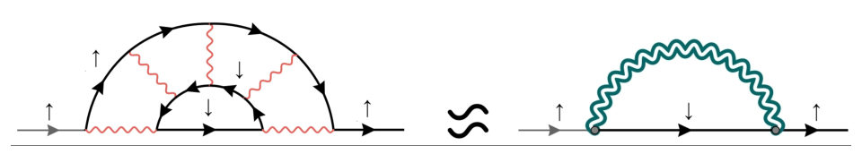
<figcaption class="paper-figure-caption"><b>Fig 2.</b> FIG. 2: Pictorial representation124 of the GT self-energy approximation as an emergent boson in proximity to a pole. Here, the wiggly red line represents the time-local screened interaction W, the black arrow represents the dressed electronic propagator, the grey arrow represents the bare electronic propagator and the wiggly double green line represents the magnon.</figcaption>
</figure>
<figure class="paper-figure-card">
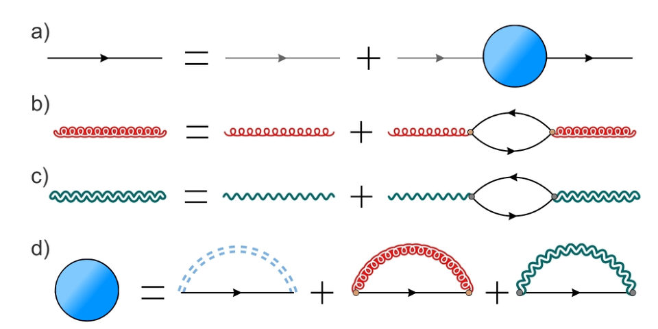
<figcaption class="paper-figure-caption"><b>Fig 3.</b> FIG. 3: Diagrammatic representation124 of the electron (a), phonon (b) and magnon (c) Dyson equation. Panel (d): electron self-energy. The black arrow represents the dressed electron propagator, the grey arrow represents the bare electron propagator, the single wiggly red line represents the bare phonon propagator, the double wiggly red line represents the dressed phonon propagator, the orange vertex represents the screened electron-phonon coupling, the single wiggly green line represents the bare magnon propagator, the double wiggly green line represents the dressed magnon propagator, the grey vertex represents the electron-magnon interaction, the double light-blue dashed line represents...</figcaption>
</figure>
<figure class="paper-figure-card">
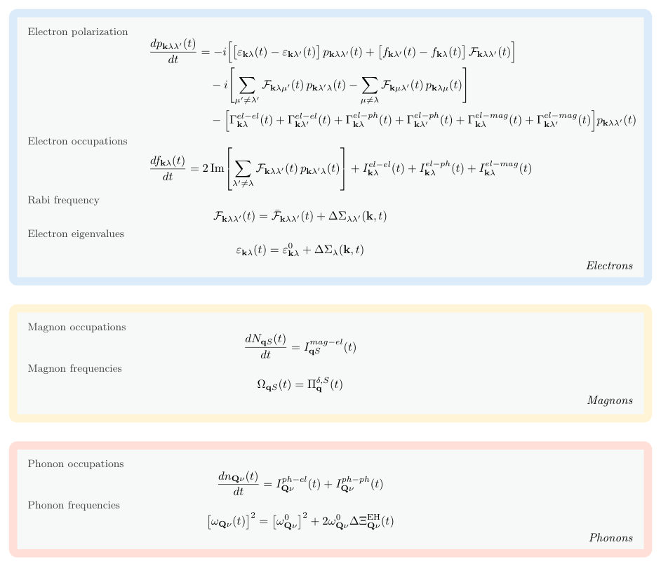
<figcaption class="paper-figure-caption"><b>Fig 4.</b> FIG. 4: Equations of motion for coupled electrons (light-blue rectangle), magnons (yellow rectangle) and phonons (red rectangle).</figcaption>
</figure>
</div>

<p><strong>Summary.</strong> This work introduces an advanced theoretical framework using Kadanoff-Baym equations to model how magnetization changes ultrafast in itinerant ferromagnets. By treating electrons, phonons, and magnons simultaneously, it provides a first-principles method to understand demagnetization. This is crucial for developing predictive theories of femtomagnetism.</p>
<p><strong>Why it may be interesting.</strong> The treatment of coupled, non-equilibrium dynamics involving multiple bosonic and fermionic excitations (magnons, phonons) within a Green's function framework is highly relevant to open quantum systems and non-equilibrium statistical mechanics.</p>
<details>
<summary>Detailed structure</summary>
<p><strong>Main problem.</strong> The paper aims to develop a first-principles theoretical framework to study ultrafast magnetization dynamics in itinerant ferromagnetic systems.</p>
<p><strong>Main result.</strong> It derives a tractable set of coupled equations for electron, phonon, and magnon dynamics, allowing for a unified description of coherent and incoherent magnetic dynamics.</p>
<p><strong>Method.</strong> It employs the Kadanoff-Baym equations in spinor space, utilizing many-body perturbation theory and the Markov approximation.</p>
<p><strong>Model / system.</strong> The system is itinerant ferromagnets, modeled using an ab initio relativistic Hamiltonian that includes spin-orbit coupling (SOC). The dynamics are treated via spinor Green's functions.</p>
<p><strong>Key observables.</strong> Ultrafast magnetization dynamics, demagnetization, electron density matrix, and phonon density matrix.</p>
<p><strong>Important parameters / regimes.</strong> Spin-orbit coupling strength, time scales (ultrafast/femtosecond), and coupling strengths between electron, phonon, and magnon sectors.</p>
<p><strong>Assumptions / limitations.</strong> The use of the Markov approximation and various approximations (like time-locality for the screened interaction W) are necessary to close the coupled equations of motion.</p>
<p><strong>Figures summary.</strong> Not specified in the notes, but the text references diagrammatic representations of the transverse particle-hole T matrix and the resulting effective electron-boson coupling.</p>
<p><strong>Paper structure.</strong> The paper builds from the general Kadanoff-Baym formalism in spinor space, incorporates SOC effects, derives equations for electron and phonon dynamics, and finally formulates the coupled equations including electron-magnon interactions via the transverse T matrix.</p>
</details>
<details>
<summary>Abstract</summary>
<p>This work introduces a theoretical framework based on the Kadanoff-Baym equations in spinor space to study ultrafast magnetization dynamics in itinerant ferromagnetic systems from first principles. By incorporating spin-orbit coupling into the ab initio Hamiltonian and generalizing the self-energies to include terms beyond the charge sector, I derive scattering integrals within the Markov approximation and quasiparticle renormalizations for electrons and phonons in the presence of spin-dependent effective interactions within a many-body perturbation theory approach. I explicitly discuss how magnons emerge in this framework, and derive, through suitable approximations, a close and tractable set of equations for coupled electron,phonon and magnon dynamics that can be solved from first principles. This approach allows to treat coherent and incoherent magnetic dynamics on an equal footing, paving the way for a first principles understanding of ultrafast magnetic dynamics and demagnetization, and opening to a truly predictive theory of femtomagnetism in periodic systems.</p>
</details>
<p><sub><a href="#top">↑ back to top</a></sub></p>

<p><a id="paper-2605.30909"></a></p>
<h3 id="pure-spin-photocurrent-in-altermagnetic-photovoltaic-battery"><a href="http://arxiv.org/abs/2605.30909v1">Pure Spin Photocurrent in Altermagnetic Photovoltaic Battery</a></h3>
<p><strong>Authors:</strong> Qiang Li, Shibo Fang, Zongmeng Yang, Xingyue Yang, Jianhua Wang, Rui Peng, Lin Zhu, Shuhua Wang, Dexing Liu, Min Zhang, Dahua Ren, Mai Zhang, Han Zhang, Yee Sin Ang<br>
<strong>Type:</strong> theory · <strong>Category:</strong> other · <strong>PDF:</strong> <a href="https://arxiv.org/pdf/2605.30909v1">https://arxiv.org/pdf/2605.30909v1</a><br>
<strong>Analysis basis:</strong> full PDF text, analyzed in chunks
<strong>Topic relevance:</strong> <code>spintronics-quantum-optics interface</code> <strong>3/5</strong> · <code>Keldysh / 2PI / non-Gaussian methods</code> <strong>2/5</strong> · <code>exotic spin models in light-matter</code> <strong>2/5</strong> · <code>methods for driven-dissipative</code> <strong>2/5</strong> · <code>non-equilibrium dynamics</code> <strong>2/5</strong> · <code>driven-dissipative phase transition</code> <strong>1/5</strong> · <code>non-equilibrium universality</code> <strong>1/5</strong></p>
<div class="figure-strip-hint">↔ Scroll figures horizontally</div>
<div class="paper-figures-scroll">
<figure class="paper-figure-card">
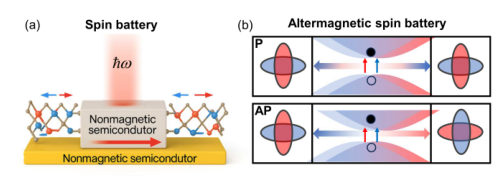
<figcaption class="paper-figure-caption"><b>Fig 1.</b> FIG. 1. Schematic illustration of the altermagnetic spin pho- tovoltaic battery. (a) Device configuration, consisting of a nonmagnetic semiconducting layer sandwiched between two altermagnetic electrodes under illumination. (b) Operating mechanism for parallel (P) and antiparallel (AP) N´eel con- figurations of the electrodes. Red and blue arrows denote spin-up- and spin-down-polarized currents, respectively.</figcaption>
</figure>
<figure class="paper-figure-card">
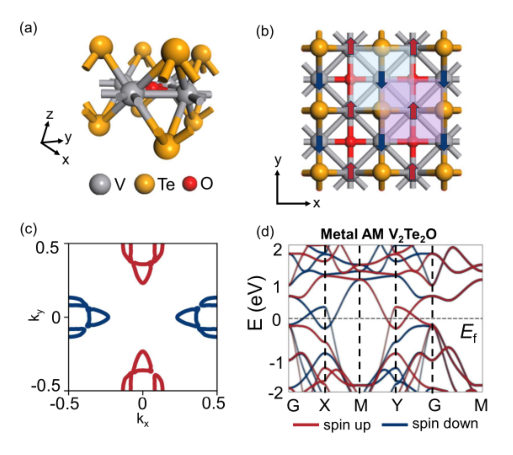
<figcaption class="paper-figure-caption"><b>Fig 2.</b> FIG. 2. Structural and electronic properties of monolayer V2Te2O. (a) Crystal structure of V2Te2O, with V, Te, and O atoms shown in gray, yellow, and red, respectively. (b) Real-space magnetic configuration of the altermagnetic state. (c) Fermi surface in the kx–ky plane, showing anisotropic spin splitting between spin-up (red) and spin-down (blue) channels. (d) Electronic band structure along high-symmetry paths, exhibiting momentum-dependent spin splitting char- acteristic of altermagnetism. The dashed line indicates the Fermi level.</figcaption>
</figure>
<figure class="paper-figure-card">
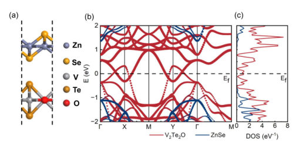
<figcaption class="paper-figure-caption"><b>Fig 3.</b> FIG. 3. Electronic structure of the V2Te2O/ZnSe heterostruc- ture. (a) Atomic structure of the interface, with Zn, Se, V, Te, and O atoms shown in blue, yellow, gray, orange, and red, re- spectively. (b) Projected band structure, where red and blue denote contributions from V2Te2O and ZnSe, respectively. (c) Corresponding projected density of states (DOS). The dashed line indicates the Fermi level.</figcaption>
</figure>
<figure class="paper-figure-card">
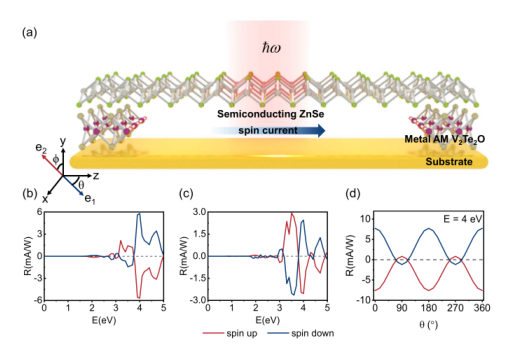
<figcaption class="paper-figure-caption"><b>Fig 4.</b> FIG. 4. Photoresponse of the altermagnetic spin photovoltaic device. (a) Schematic illustration of the device under illumi- nation, with a ZnSe semiconducting layer sandwiched between altermagnetic electrodes. (b,c) Spin-resolved photocurrent as a function of photon energy for parallel (P) and antiparallel (AP) N´eel configurations. (d) Polarization angular depen- dence of the photocurrent at E = 4 eV. Red and blue curves denote spin-up and spin-down photocurrents, respectively. θ represents the angle between the polarization direction and the vector e1.</figcaption>
</figure>
</div>

<p><strong>Summary.</strong> This theoretical study proposes an altermagnetic photovoltaic battery to generate a pure spin photocurrent using light. By simulating a $  ext{V}_2    ext{Te}_2   ext{O}/ ext{ZnSe}/  ext{V}_2    ext{Te}_2   ext{O}$ junction, the authors show that an antiparallel alignment of the altermagnetic electrodes breaks inversion symmetry, enabling a pure spin current without a net charge current. This establishes a promising, light-driven route for pure spin-current generation in spintronic devices.</p>
<p><strong>Why it may be interesting.</strong> While the primary focus is condensed matter spintronics, the use of quantum transport simulations (DFT+NEGF) to model light-matter interaction and spin currents is relevant to open quantum systems and quantum optics.</p>
<details>
<summary>Detailed structure</summary>
<p><strong>Main problem.</strong> The paper addresses the generation of a pure spin photocurrent using light in an altermagnetic photovoltaic battery, aiming for a light-driven pure spin-current generation mechanism.</p>
<p><strong>Main result.</strong> The device successfully generates a pure spin photocurrent when the two altermagnetic electrodes are in an antiparallel (AP) Néel configuration, characterized by spin-up and spin-down photocurrents of equal magnitude but opposite sign.</p>
<p><strong>Method.</strong> The study employs first-principles quantum-transport simulations, combining Density-Functional Theory (DFT) with the Nonequilibrium Green's Function (DFT+NEGF) method.</p>
<p><strong>Model / system.</strong> The physical system is an altermagnetic spin photovoltaic battery structured as $   ext{V}_2    ext{Te}_2   ext{O}/ ext{ZnSe}/  ext{V}_2    ext{Te}_2   ext{O}$. Altermagnets are used as electrodes because they exhibit momentum-dependent spin splitting without net magnetization.</p>
<p><strong>Key observables.</strong> Pure spin photocurrent ($  ext{I}<em _downarrow="\downarrow">{\uparrow} = -   ext{I}</em>$), photoresponse ($R$), and the dependence of the photocurrent on light polarization (linear vs. circular) and photon energy.</p>
<p><strong>Important parameters / regimes.</strong> The effect is maximized in the AP state and is tunable by photon energy and polarization angle. The simulation uses a $ ext{V}_2    ext{Te}_2   ext{O}$ platform.</p>
<p><strong>Assumptions / limitations.</strong> The mechanism relies on the spin-selective photocurrent extraction imposed by the altermagnetic electrodes, and the central $    ext{ZnSe}$ region is assumed to be photoactive.</p>
<p><strong>Figures summary.</strong> Figures illustrate the device schematic, the operating mechanism for parallel (P) and antiparallel (AP) Néel vectors, and show the spin-resolved photocurrent response as a function of photon energy and light polarization.</p>
<p><strong>Paper structure.</strong> The paper establishes the theoretical framework by detailing the physical system and the simulation methods (DFT+NEGF). It then presents the core results, contrasting the zero photocurrent in the P state with the finite pure spin photocurrent in the AP state, demonstrating tunability with light polarization.</p>
</details>
<details>
<summary>Abstract</summary>
<p>Altermagnets, featuring momentum-dependent spin splitting without net magnetization, provide a promising platform for spintronic functionalities beyond conventional ferromagnets and antiferromagnets. Here, we propose an altermagnetic spin photovoltaic battery consisting of a nonmagnetic semiconducting layer sandwiched between two altermagnetic electrodes. Using first-principles quantum-transport simulations, we show that a V2Te2O/ZnSe/V2Te2O junction supports a pure spin photocurrent for opposite Néel vectors in the two altermagnetic electrodes, with spin-up and spin-down photocurrents equal in magnitude and opposite in sign. The effect persists under both linearly and circularly polarized light and remains tunable with photon energy and polarization angle. Our results establish a realistic route toward light-driven pure spin-current generation in altermagnetic junctions.</p>
</details>
<p><sub><a href="#top">↑ back to top</a></sub></p>

<p><a id="paper-2605.31263"></a></p>
<h3 id="valley-polarized-orbital-and-spin-magnetism-induced-by-femtosecond-optical-pulses-in-two-dimensional-semiconductors"><a href="http://arxiv.org/abs/2605.31263v1">Valley-polarized Orbital and Spin Magnetism Induced by Femtosecond Optical Pulses in Two-Dimensional Semiconductors</a></h3>
<p><strong>Authors:</strong> M. S. Mrudul, Peter M. Oppeneer<br>
<strong>Type:</strong> theory · <strong>Category:</strong> other · <strong>PDF:</strong> <a href="https://arxiv.org/pdf/2605.31263v1">https://arxiv.org/pdf/2605.31263v1</a><br>
<strong>Analysis basis:</strong> full PDF text, analyzed in chunks
<strong>Topic relevance:</strong> <code>exotic spin models in light-matter</code> <strong>3/5</strong> · <code>spintronics-quantum-optics interface</code> <strong>3/5</strong> · <code>Keldysh / 2PI / non-Gaussian methods</code> <strong>2/5</strong> · <code>methods for driven-dissipative</code> <strong>2/5</strong> · <code>non-equilibrium dynamics</code> <strong>2/5</strong> · <code>driven-dissipative phase transition</code> <strong>1/5</strong></p>
<div class="figure-strip-hint">↔ Scroll figures horizontally</div>
<div class="paper-figures-scroll">
<figure class="paper-figure-card">
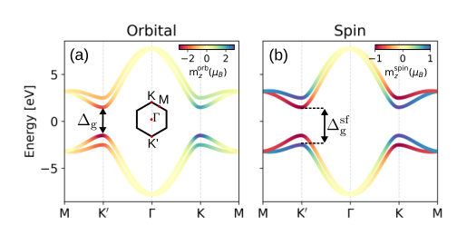
<figcaption class="paper-figure-caption"><b>Fig 1.</b> FIG. 1. Electronic band structure of an archetypal 2D semi- conductor. (a) Orbital and (b) spin components of magnetic moments (mnk,z) projected onto the band structure along the high-symmetry directions. The inset in (a) shows the high- symmetry points in the first Brillouin zone.</figcaption>
</figure>
<figure class="paper-figure-card">
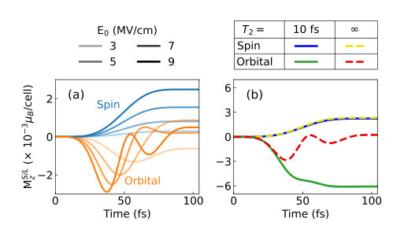
<figcaption class="paper-figure-caption"><b>Fig 2.</b> FIG. 3. (a) Laser-driven femtosecond dynamics of orbital (orange) and spin (blue) magnetization under laser pulses with ¯hω ≈∆sf g and different electric field strengths, indi- cated by the transparency of the line plots. (b) Laser-driven dynamics of magnetization with an electron-hole dephasing time T2 of 10 fs (blue for spin and green for orbital contri- butions) and in the absence of dephasing (∞; yellow dashed for spin and red dashed for orbital). The peak laser intensity is I0 = 1011 W/cm2, corresponding to the field amplitude E0 = 8.7 MV/cm.</figcaption>
</figure>
<figure class="paper-figure-card">
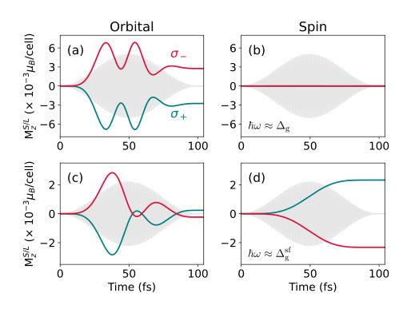
<figcaption class="paper-figure-caption"><b>Fig 3.</b> FIG. 2. Laser-driven dynamics of the orbital (left panels) and spin (right panels) magnetization. Red and blue curves correspond to magnetization induced by left (σ−) and right (σ+) circularly polarized laser pulses, respectively. The top panels show the response to a laser pulse with photon energy 3.1 eV (¯hω ≈∆g), while the bottom panels correspond to excitation at 4.1 eV (¯hω ≈∆sf g ). The grey shaded regions indicate the temporal profile of the 100 fs long laser pulse with a peak intensity of 1011 W/cm2.</figcaption>
</figure>
<figure class="paper-figure-card">
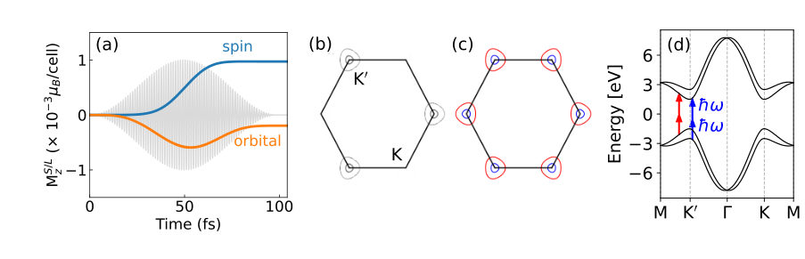
<figcaption class="paper-figure-caption"><b>Fig 4.</b> FIG. 4. (a) Laser-driven dynamics of the orbital (orange) and spin (light blue) magnetization for a laser pulse with photon energy ¯hω = 2.1 eV. (b) Electron population in the first conduction band (CB1) in reciprocal space at the end of the laser pulse. (c) Contours in the first Brillouin zone satisfying ECB1,k −EVB1,k = 2¯hω (red) and ECB1,k −EVB2,k = 2¯hω (blue). (d) Schematic illustration of two-photon excitation induced by a right-circularly polarized laser field. The population generated in the first conduction band arises from transitions from the first valence band (VB1 →CB1, blue arrows) and the second valence band (VB2 →CB1, red arrows).</figcaption>
</figure>
<figure class="paper-figure-card">
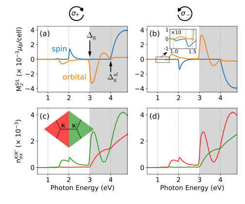
<figcaption class="paper-figure-caption"><b>Fig 5.</b> FIG. 5. Laser-induced spin (blue) and orbital (orange) rem- nant magnetization (calculated at the end of the laser pulse) as a function of the driving photon energy for (a) left- and (b) right-circularly polarized laser pulses. Panels (c) and (d) show the laser-excited electron population in the conduction bands at the end of the laser pulse, integrated around the K (red) and K′ (green) valleys, for (c) left- and (d) right-circularly polarized laser pulses. The separation of the reciprocal space unit-cell around the K and K′ valleys is illustrated in the inset of panel (c). The gray-shaded region indicates photon ener- gies above the band gap, ∆g.</figcaption>
</figure>
</div>

<p><strong>Summary.</strong> This theoretical work models how femtosecond laser pulses generate non-equilibrium spin and orbital magnetism in 2D semiconductors like TMDs. It shows that orbital and spin responses are governed by distinct physical mechanisms, leading to different temporal behaviors. The findings highlight the crucial role of orbital contributions in future ultrafast spintronic and magnetoelectronic devices.</p>
<p><strong>Why it may be interesting.</strong> The explicit separation and comparison of orbital and spin dynamics, particularly the role of direct electric field coupling versus SOC mediation, provides a rich platform for understanding ultrafast quantum control in condensed matter systems.</p>
<details>
<summary>Detailed structure</summary>
<p><strong>Main problem.</strong> The study investigates the ultrafast generation and distinct dynamics of spin and orbital magnetism in two-dimensional (2D) semiconductors using femtosecond optical pulses.</p>
<p><strong>Main result.</strong> The paper demonstrates that orbital and spin magnetic moments evolve via fundamentally different light-matter coupling mechanisms, allowing for selective control and distinct temporal dynamics.</p>
<p><strong>Method.</strong> The dynamics are modeled using a time-dependent density-matrix formalism solved numerically, incorporating electron-hole dephasing effects.</p>
<p><strong>Model / system.</strong> The system is a 2D gapped Dirac semiconductor, representative of TMDs, modeled by a tight-binding Hamiltonian incorporating spin-orbit coupling. The interaction is driven by circularly polarized femtosecond laser pulses.</p>
<p><strong>Key observables.</strong> Time evolution of spin ($\mathbf{m}_{	ext{spin}}$) and orbital ($\mathbf{m}_{	ext{orb}}$) magnetization, and the dependence of remnant magnetization on photon energy.</p>
<p><strong>Important parameters / regimes.</strong> Laser pulse duration (100 fs), peak intensity ($10^{11} 	ext{ W/cm}^2$), and specific photon energies relative to the band gap ($\Delta_g$) and spin-flip gap ($\Delta_{sf}g$).</p>
<p><strong>Assumptions / limitations.</strong> The analysis relies on the minimal coupling in the dipole approximation and includes decoherence effects ($T_2$).</p>
<p><strong>Figures summary.</strong> Figures illustrate the projected components of orbital and spin magnetic moments, the time evolution of magnetization under different excitation conditions, and the connection between remnant magnetism and valley-polarized conduction band populations.</p>
<p><strong>Paper structure.</strong> The paper systematically analyzes the generation of magnetization using time-dependent density matrix equations, comparing resonant vs. multiphoton excitation regimes, and contrasting the distinct dynamics of orbital (Rabi-like, fast) versus spin (gradual, SOC-mediated) responses.</p>
</details>
<details>
<summary>Abstract</summary>
<p>We theoretically investigate the ultrafast generation of spin and orbital magnetism in a two-dimensional gapped Dirac system with spin-orbit coupling. This system is representative of two-dimensional hexagonal semiconductors, such as transition-metal dichalcogenides that exhibit valley-selective optical selection rules arising from the valley-contrasting magnetic texture of their band structure. Using a time-dependent density-matrix formalism, we demonstrate that circularly polarized laser pulses generate nonequilibrium magnetization under both resonant and multiphoton resonant conditions. We show that the induced spin and orbital magnetic moments can be distinctly controlled via the photon energy and polarization of the driving field. Furthermore, spin and orbital dynamics originate from fundamentally different light-matter coupling mechanisms, leading to qualitatively dissimilar temporal behaviors. The orbital magnetic moment couples directly to the external electric field, resulting in faster dynamics and pronounced Rabi-like oscillations, whereas the spin response develops gradually through spin-orbit coupling. Consequently, orbital dynamics is significantly more sensitive to electron-hole dephasing than the spin response. Our results highlight the importance of properly accounting for orbital contributions in future technologies that utilize femtosecond control of magnetism.</p>
</details>
<p><sub><a href="#top">↑ back to top</a></sub></p>

<p><a id="paper-2605.30575"></a></p>
<h3 id="observation-and-control-of-the-magnetic-photogalvanic-effect-from-strongly-bound-excitons"><a href="http://arxiv.org/abs/2605.30575v1">Observation and Control of the Magnetic Photogalvanic Effect from Strongly Bound Excitons</a></h3>
<p><strong>Authors:</strong> Xianfan Nie, Tarun Patel, Hyunggeun Lee, Chuangtang Wang, Meixin Cheng, Mingrui Lai, Bowen Yang, Matteo Pennacchietti, Shiyu Liu, Hechang Lei, Liuyan Zhao, Michael E. Reimer, Su Ying Quek, Adam W. Tsen<br>
<strong>Type:</strong> experiment · <strong>Category:</strong> other · <strong>PDF:</strong> <a href="https://arxiv.org/pdf/2605.30575v1">https://arxiv.org/pdf/2605.30575v1</a><br>
<strong>Analysis basis:</strong> full PDF text, analyzed in chunks
<strong>Topic relevance:</strong> <code>exotic spin models in light-matter</code> <strong>3/5</strong> · <code>spintronics-quantum-optics interface</code> <strong>3/5</strong> · <code>analog quantum simulation</code> <strong>1/5</strong> · <code>interference shaping light</code> <strong>1/5</strong> · <code>quantum optics experiment</code> <strong>1/5</strong></p>
<div class="figure-strip-hint">↔ Scroll figures horizontally</div>
<div class="paper-figures-scroll">
<figure class="paper-figure-card">
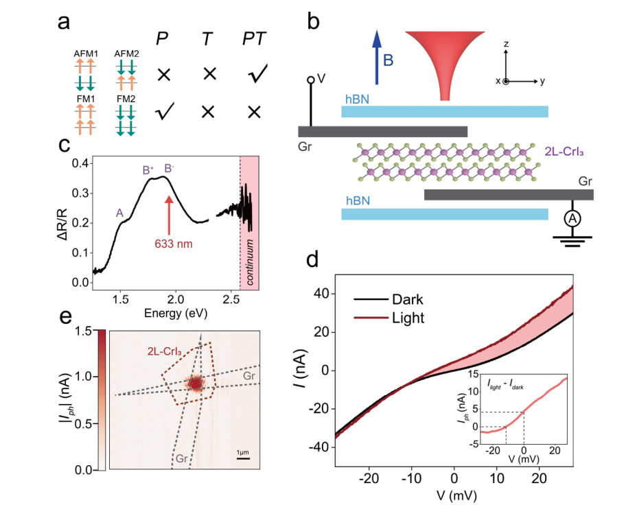
<figcaption class="paper-figure-caption"><b>Fig 1.</b> Figure 1 | Device geometry of bilayer CrI3 tunnel junctions and photocurrent measurement scheme.</figcaption>
</figure>
<figure class="paper-figure-card">
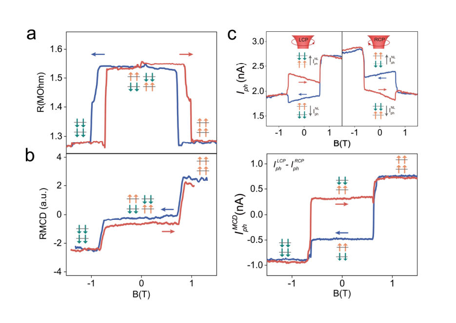
<figcaption class="paper-figure-caption"><b>Fig 2.</b> Figure 2 | Magnetic-field-switching of spin states and circular magnetic photogalvanic eƯect in bilayer CrI3.</figcaption>
</figure>
<figure class="paper-figure-card">
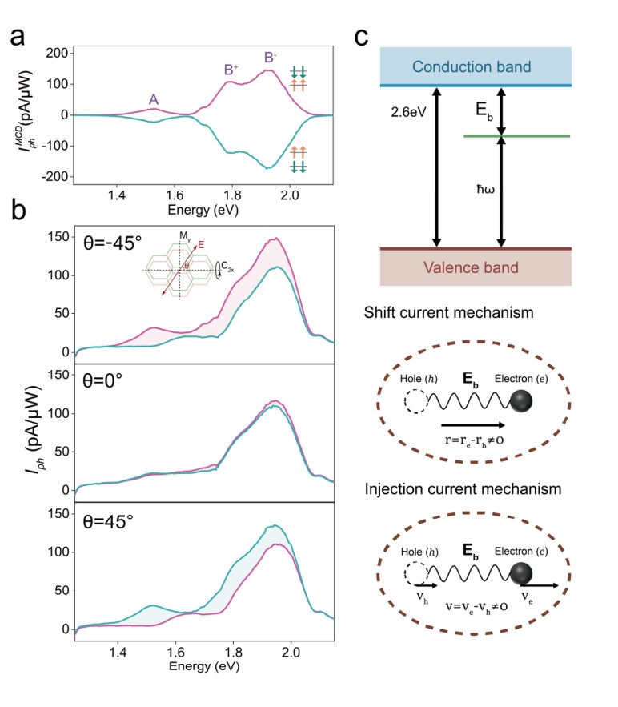
<figcaption class="paper-figure-caption"><b>Fig 3.</b> Figure 4 | Spectral dependence of circular and linear magnetic photogalvanic responses and schematic illustrations of the shift and injection current mechanisms for bound excitons.</figcaption>
</figure>
</div>

<p><strong>Summary.</strong> This paper reports the observation and control of the magnetic photogalvanic effect in bilayer CrI3, a 2D magnetic material. The researchers demonstrated that this nonlinear photocurrent is strongly enhanced and controlled by the resonant excitation of strongly bound excitons. The findings highlight the potential of these 2D magnets for next-generation, tunable optoelectronic detectors.</p>
<p><strong>Why it may be interesting.</strong> The work provides experimental evidence of a nonlinear optical effect (photogalvanic) whose mechanism is tied to many-body excitonic physics and magnetic symmetry breaking, which is highly relevant for understanding light-matter interaction in quantum materials.</p>
<details>
<summary>Detailed structure</summary>
<p><strong>Main problem.</strong> The study aims to observe and control the magnetic photogalvanic effect, particularly demonstrating its origin from strongly bound excitons in magnetic materials.</p>
<p><strong>Main result.</strong> A sizable magnetic photogalvanic effect was demonstrated in bilayer CrI3, showing a clear signature dependent on light handedness and the magnetic state, which is unique to the bilayer structure.</p>
<p><strong>Method.</strong> The research employed photocurrent measurements, varying bias, and using circularly/linearly polarized light, alongside TMR and RMCD measurements.</p>
<p><strong>Model / system.</strong> The physical platform is a bilayer CrI3 tunnel junction, which acts as a magnetic tunnel barrier. The effect is analyzed within a many-body framework considering strongly bound Wannier-type excitons.</p>
<p><strong>Key observables.</strong> Photocurrent ($    ext{I}<em ext_ph="ext{ph">{    ext{ph}}$), photocurrent MCD ($\Delta   ext{I}</em>$), and the dependence of these signals on light polarization angle ($ heta$) and magnetic field ($B$).}</p>
<p><strong>Important parameters / regimes.</strong> Exciton binding energies (e.g., 1.1 eV, 0.8 eV), magnetic field switching, and electric field tuning of interlayer symmetry.</p>
<p><strong>Assumptions / limitations.</strong> The analysis assumes that the photogalvanic response is strongly linked to the excitonic resonances and that the effect is suppressed when inversion symmetry is restored (e.g., in trilayer CrI3).</p>
<p><strong>Figures summary.</strong> Figures illustrate the symmetry properties of the magnetic states, the device geometry, exciton peaks via reflectance, and the dependence of photocurrent on bias and polarization angle.</p>
<p><strong>Paper structure.</strong> The paper systematically investigates the magnetic photogalvanic effect by first establishing the theoretical basis, then demonstrating the effect in bilayer CrI3 using polarization and field control, and finally confirming the exciton origin and layer dependence.</p>
</details>
<details>
<summary>Abstract</summary>
<p>Photogalvanic effects arising from the quantum geometry of noncentrosymmetric materials are promising for next-generation light-harvesting devices that do not require a built-in electric field. Recent theories predict photogalvanic currents generated in magnetic systems with spin-dependent symmetry breaking as well as by bound exciton states, allowing for potential magnetic field control of the photoresponse and enhanced detection of deep sub-gap signals, respectively. We demonstrate the magnetic photogalvanic effect in a bilayer CrI3 tunnel junction with both magnetic field switching and electric field tuning of interlayer symmetry. By controlling for the polarization and energy of light illumination, we disentangle the shift and injection current contributions and find that the peak response occurs under resonant excitation of strongly bound excitons in CrI3. Our results can be captured within a many-body framework of the photogalvanic effect, while our devices function as tunable, multispectral helicity- and polarization-sensitive detectors that highlight the potential of 2D magnets for future optoelectronic applications.</p>
</details>
<p><sub><a href="#top">↑ back to top</a></sub></p>

<p><a id="paper-2605.30764"></a></p>
<h3 id="crystal-dislocations-as-atomic-scale-ratchets"><a href="http://arxiv.org/abs/2605.30764v1">Crystal Dislocations as Atomic Scale Ratchets</a></h3>
<p><strong>Authors:</strong> Wu-Rong Jian, Yifan Wang, Wei Cai<br>
<strong>Type:</strong> theory · <strong>Category:</strong> statistical mechanics · <strong>PDF:</strong> <a href="https://arxiv.org/pdf/2605.30764v1">https://arxiv.org/pdf/2605.30764v1</a><br>
<strong>Analysis basis:</strong> full PDF text, analyzed in chunks
<strong>Topic relevance:</strong> <code>analog quantum simulation</code> <strong>2/5</strong> · <code>driven-dissipative phase transition</code> <strong>2/5</strong> · <code>non-equilibrium dynamics</code> <strong>2/5</strong> · <code>non-equilibrium universality</code> <strong>2/5</strong> · <code>Frenkel-Kontorova</code> <strong>1/5</strong> · <code>methods for driven-dissipative</code> <strong>1/5</strong></p>
<div class="figure-strip-hint">↔ Scroll figures horizontally</div>
<div class="paper-figures-scroll">
<figure class="paper-figure-card">
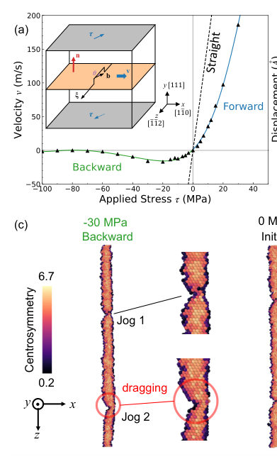
<figcaption class="paper-figure-caption"><b>Fig 1.</b> Figure 1: (a) Velocity of jogged (solid line) and straight (dashed line) dislocation with character angle θ = 30◦as a function of applied stress τ. The inset shows a schematics of the simulation cell containing a jogged dislocation with Burgers vector b and line direction ξ. The dislocation moves on its glide plane with normal vector n. The arrows on the top and bottom surfaces indicate the direction of applied stress τ when it is positive, which causes the dislocation to move in the positive x-direction (forward). (b) Displacement- time curve of the dislocation motion under sinusoidal cyclic loading at a stress amplitude of 30 MPa. (c) Atomic structure of the jogged dislocation under...</figcaption>
</figure>
<figure class="paper-figure-card">
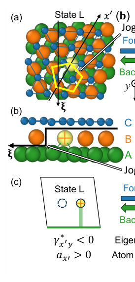
<figcaption class="paper-figure-caption"><b>Fig 2.</b> Figure 2: (a) Energy minimized atomic structures near Jog 2 of the two states (L and R) before and after jog motion, viewing from the top of the slip plane x-z. ±x′ is the jog motion direction, aligned with the Burgers vector b direction. The jog core is marked as a yellow petagon and the highlighted atom with the cross mark is the core atom that moves in the opposite direction of the jog motion. (b) Side view (x′-y plane) of the atomic structure of Jog 2. The dislocation line is illustrated as a black arrowed line. The coupling between the core atom and the neighboring layers are represented as three colored struts. (c) Simplified schematic of the two states, where State L corresponds to...</figcaption>
</figure>
<figure class="paper-figure-card">
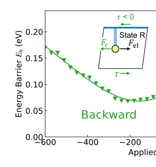
<figcaption class="paper-figure-caption"><b>Fig 3.</b> Figure 3: Energy barriers of forward and backward mechanisms at different applied stresses. The corresponding inset schematics demonstrate the force analysis of the for- ward and backward mechanisms.</figcaption>
</figure>
</div>

<p><strong>Summary.</strong> This work demonstrates that jogged dislocations in FCC crystals act as atomic-scale ratchets, exhibiting asymmetric mobility when subjected to cyclic stress. Using MD simulations, the authors pinpoint the physical origin of this asymmetry to a unique coupling between atomic displacement and the jog's strain field. This finding has major implications for understanding fatigue and plastic deformation mechanisms.</p>
<p><strong>Why it may be interesting.</strong> While focused on solid-state mechanics, the concept of an intrinsic, geometry-rooted ratchet mechanism driven by non-linear coupling ($\mathbf{a}$ and $\gamma^*$) provides an analogy for engineered quantum ratchets or directed transport in mesoscopic quantum systems.</p>
<details>
<summary>Detailed structure</summary>
<p><strong>Main problem.</strong> The primary goal is to identify and characterize intrinsic, atomic-scale mechanisms that break symmetry to produce a rectified (asymmetric) response to external cyclic stimuli.</p>
<p><strong>Main result.</strong> Jogged dislocations in FCC crystals exhibit significant mobility asymmetry under opposite applied stresses, which is attributed to an unconventional coupling between atomic displacement and the jog's eigenstrain.</p>
<p><strong>Method.</strong> The study employs Molecular Dynamics (MD) simulations and Nudged Elastic Band (NEB) calculations to model dislocation motion and calculate energy barriers.</p>
<p><strong>Model / system.</strong> The system modeled is the jogged edge dislocation within face-centered cubic (FCC) nickel. The analysis focuses on the local atomic structure at the jog, which acts as an intrinsic 'lattice ratchet.'</p>
<p><strong>Key observables.</strong> Dislocation velocity ($v$) vs. applied stress ($   au$), net directional drift under cyclic loading, and the coupling between the atomic displacement vector ($\mathbf{a}$) and the eigenstrain ($\gamma^*$).</p>
<p><strong>Important parameters / regimes.</strong> Applied shear stress ($ au$), crystal structure (FCC), and the specific geometry of the jog.</p>
<p><strong>Assumptions / limitations.</strong> Conventional micromechanics models assume a symmetric response to stress, which the work challenges. The asymmetry is found to be general for jogged dislocations in FCC crystals.</p>
<p><strong>Figures summary.</strong> Figures illustrate the asymmetry in velocity vs. stress curves (Fig. 1a, S4-S6), net directional drift under cyclic loading (Fig. 1b, S8), and the atomic configurations detailing the force balance during forward versus backward jog movement (Fig. 2, 3).</p>
<p><strong>Paper structure.</strong> The paper progresses from establishing the general problem of symmetry breaking in materials, to simulating the asymmetric mobility using MD, and finally deriving the microscopic physical origin of this asymmetry through force analysis (NEB calculations).</p>
</details>
<details>
<summary>Abstract</summary>
<p>The symmetry of a system's response to external stimuli is a fundamental concept in physics and materials science. At the microscopic scale, breaking this symmetry to achieve a rectified response is exceptionally difficult to engineer and remains rare in nature. Conventional micromechanics models of crystalline solids assume a symmetric response to applied stress, where reversing the load simply inverts the direction of defect velocity without altering its magnitude. In this work, we report an atomic-scale, geometry-rooted mechanism that breaks this symmetry. Molecular dynamics simulations of face-centered cubic nickel reveal that dislocations containing atomic-scale jogs exhibit asymmetric mobility under opposite applied stresses, reversing the loading direction triggers significantly higher drag. This asymmetry arises from an unconventional coupling between an atomic displacement vector and the second-order tensorial eigenstrain of the jog motion mechanism. Because jogs are ubiquitous structures in plastic deformation, this discovery challenges classical descriptions of plastic deformation mechanisms, with direct implications to cyclic creep, and opens new pathways for defect engineering to enhance fatigue resistance.</p>
</details>
<p><sub><a href="#top">↑ back to top</a></sub></p>

<p><a id="paper-2605.31197"></a></p>
<h3 id="surface-lone-pair-polarization-probed-by-quantum-geometric-transport-in-tellurium"><a href="http://arxiv.org/abs/2605.31197v1">Surface lone-pair polarization probed by quantum-geometric transport in tellurium</a></h3>
<p><strong>Authors:</strong> Nathanael N. Batista, Wendel S. Paz, Manuel Suárez-Rodríguez, Pierpaolo Fontana, Victor Velasco, Marcus V. O. Moutinho, Chang Niu, Peide D. Ye, Marco Gobbi, Fèlix Casanova, Luis E. Hueso, Caio Lewenkopf, Marcello B. Silva Neto<br>
<strong>Type:</strong> both · <strong>Category:</strong> other · <strong>PDF:</strong> <a href="https://arxiv.org/pdf/2605.31197v1">https://arxiv.org/pdf/2605.31197v1</a><br>
<strong>Analysis basis:</strong> full PDF text, analyzed in chunks
<strong>Topic relevance:</strong> <code>Keldysh / 2PI / non-Gaussian methods</code> <strong>2/5</strong> · <code>methods for driven-dissipative</code> <strong>2/5</strong> · <code>non-equilibrium dynamics</code> <strong>2/5</strong></p>
<div class="figure-strip-hint">↔ Scroll figures horizontally</div>
<div class="paper-figures-scroll">
<figure class="paper-figure-card">
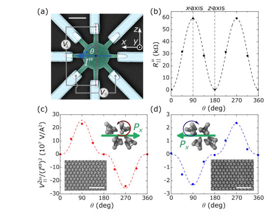
<figcaption class="paper-figure-caption"><b>Fig 1.</b> Figure 1. Quantum-geometric transport. Experimental data from Ref. [15]. (a) An AC current Iω is injected while the sample is rotated in the xz plane by an angle θ with respect to the crystallographic axes. (b) First-harmonic longitudi- nal resistance V ω ∥/Iω = Rω ∥measured as a function of θ. The linear response is proportional to −δσgeo xx (E2 0) sin2 θ, with δσgeo xx &lt; 0 for any E0. (c) and (d) Second-harmonic V 2ω ∥ /(Iω)2</figcaption>
</figure>
<figure class="paper-figure-card">
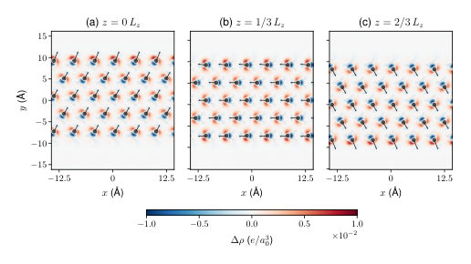
<figcaption class="paper-figure-caption"><b>Fig 2.</b> Figure 3. Excess electronic density (red) and charge de- pletion (blue) relative to the atomic densities of constituent atoms. The three panels correspond to slices at (a) z = 0, (b) z = Lz/3, and (c) z = 2Lz/3, for the three non-equivalent atoms in the unit cell. The black arrows indicate the local inversion-odd dipolar slopes computed from the gradient of the Hartree potential, providing the directions of the local lone-pair dipoles.</figcaption>
</figure>
<figure class="paper-figure-card">
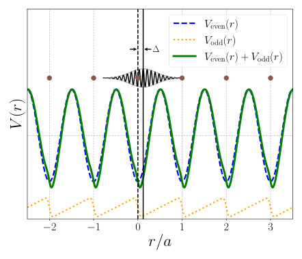
<figcaption class="paper-figure-caption"><b>Fig 3.</b> Figure 2. Inversion-odd wavepacket shift. Schematic il- lustration of the one-dimensional crystal potential, V (r) = Veven(r)+Vodd(r). The inversion-even component Veven(r) de- fines symmetric wells centered at the ionic positions r0 (brown circles). The inversion-odd component Vodd(r) introduces an asymmetric local slope −eE0 ≡∇Vodd|rc≃r0, which shifts the total potential minimum away from the centrosymmetric ref- erence (dashed line) by an offset ∆(solid line). This inversion- breaking crystal field causes a positional shift in the center of mass of the localized Bloch wavepacket.</figcaption>
</figure>
<figure class="paper-figure-card">
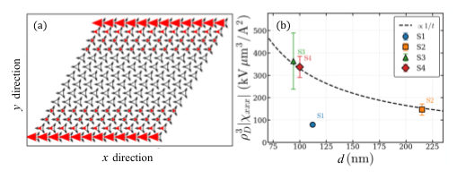
<figcaption class="paper-figure-caption"><b>Fig 4.</b> Figure 5. Lone-pair polarization. (a) Schematic showing how the loss of coordination at the boundaries breaks the bulk C3 symmetry, generating a finite polarization near the surfaces. Here, E0 &lt; 0 (and thus χxxx(E0) &gt; 0) produce the angular dependence shown in Fig. 1(d). (b) Measured ρ3 D|χxxx(d)| as a function of flake thickness d for samples S1, S2, S3, and S4 [40], demonstrating a clear 1/d dependence. The deviation of S1 from this scaling is discussed in the main text.</figcaption>
</figure>
<figure class="paper-figure-card">
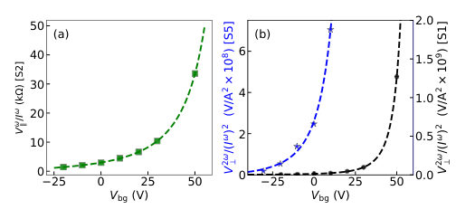
<figcaption class="paper-figure-caption"><b>Fig 5.</b> Figure 4. Gate-voltage dependence. Experimental data from Ref. [40] showing scaling behavior of the harmonic re- sponses as a function of the applied back-gate voltage Vbg for selected samples (labeled on the y-axis). (a) First-harmonic response, V ω ∥/Iω ∼µ−5/2, and (b) second-harmonic response, V 2ω ⊥/(Iω)2 ∼µ−7/2, displaying the scaling laws predicted from the QG correction to δσgeo xx and χxxx, respectively.</figcaption>
</figure>
</div>

<p><strong>Summary.</strong> This work establishes that surface lone-pair polarization in materials like tellurium can be probed using quantum-geometric transport measurements. By analyzing nonlinear electrical responses, the authors successfully map measurable quantities to the first and second moments of the surface polarization field. This provides a powerful, microscopic route for engineering polarization-driven electronic devices.</p>
<p><strong>Why it may be interesting.</strong> The methodology provides a concrete, measurable link between a subtle, symmetry-breaking microscopic property (lone-pair polarization) and macroscopic, nonlinear electronic transport phenomena, which is valuable for designing quantum-geometric devices.</p>
<details>
<summary>Detailed structure</summary>
<p><strong>Main problem.</strong> The paper aims to develop a microscopic understanding of how surface lone-pair polarization in crystals, like tellurium, influences electronic transport properties.</p>
<p><strong>Main result.</strong> Quantum-geometric transport theory successfully links measurable nonlinear electrical responses (second and third harmonics) to the first and second moments of the surface polarization field.</p>
<p><strong>Method.</strong> The authors combine first-principles calculations (DFT) with quantum-geometry transport theory, deriving effective Hamiltonians and analyzing nonlinear current expansions.</p>
<p><strong>Model / system.</strong> The system is trigonal tellurium, where the surface lone-pair polarization is modeled as an inversion-odd dipolar component of the crystal potential, leading to quantum-geometric corrections to Bloch wavepacket dynamics.</p>
<p><strong>Key observables.</strong> Linear and nonlinear transport coefficients ($\delta\sigma_{	ext{geo}}^{xx}, \chi_{xxx}$), DC rectification voltage ($V_{	ext{DC}}$), and temperature/thickness scaling of harmonic responses.</p>
<p><strong>Important parameters / regimes.</strong> Surface lone-pair polarization field ($E_0$), temperature ($T$), flake thickness ($d$), and gate voltage ($\mu$).</p>
<p><strong>Assumptions / limitations.</strong> The analysis relies on perturbative expansions in electric fields and current densities, and the use of a coarse-grained lattice model for polarization thermodynamics.</p>
<p><strong>Figures summary.</strong> Figures show experimental data confirming angular dependencies ($\sin^2	heta, \sin^3	heta$) for harmonic responses, and theoretical plots mapping polarization moments ($\langle P_x 
angle_T, \langle P_x^2 
angle_T$) against temperature or thickness.</p>
<p><strong>Paper structure.</strong> The paper progresses from establishing the physical origin of surface polarization, deriving the quantum-geometric transport formalism, linking transport coefficients to polarization moments, and finally demonstrating the predictive power of this framework using harmonic response measurements.</p>
</details>
<details>
<summary>Abstract</summary>
<p>Stereochemically active lone pairs are ubiquitous microscopic sources of polarity in molecules and solids, but their collective behavior in crystals is often hidden by symmetry or confined to surfaces. Here we show that quantum-geometry transport provides a sensitive probe of surface lone-pair polarization in trigonal tellurium. This surface polarization appears microscopically as an inversion-odd dipolar component of the crystal potential, which shifts the center of mass of Bloch wavepackets and produces quantum-geometric corrections to their velocity. We describe this lone-pair polar texture through a minimal three-component lattice model, and we show that the resulting linear and nonlinear transport coefficients probe, respectively, the second and first moments of the net polarization field. Because rectified voltages in tellurium flakes are directly proportional to the surface lone-pair polarization, our results provide a microscopic route to understanding and engineering polarization-driven, quantum-geometric electronic devices based on tellurium allotropes.</p>
</details>
<p><sub><a href="#top">↑ back to top</a></sub></p>

<p><a id="paper-2605.30704"></a></p>
<h3 id="nonlinear-schrodinger-equations-for-dense-bose-fluid-and-he4-film-at-low-temperatures"><a href="http://arxiv.org/abs/2605.30704v1">Nonlinear Schrodinger Equations for Dense Bose Fluid and He4 Film at Low Temperatures</a></h3>
<p><strong>Authors:</strong> Vladimir I. Kruglov<br>
<strong>Type:</strong> theory · <strong>Category:</strong> quantum gases · <strong>PDF:</strong> <a href="https://arxiv.org/pdf/2605.30704v1">https://arxiv.org/pdf/2605.30704v1</a><br>
<strong>Analysis basis:</strong> full PDF text, analyzed in chunks
<strong>Topic relevance:</strong> <code>Keldysh / 2PI / non-Gaussian methods</code> <strong>2/5</strong> · <code>analog quantum simulation</code> <strong>1/5</strong> · <code>non-equilibrium dynamics</code> <strong>1/5</strong></p>
<div class="figure-strip-hint">↔ Scroll figures horizontally</div>
<div class="paper-figures-scroll">
<figure class="paper-figure-card">
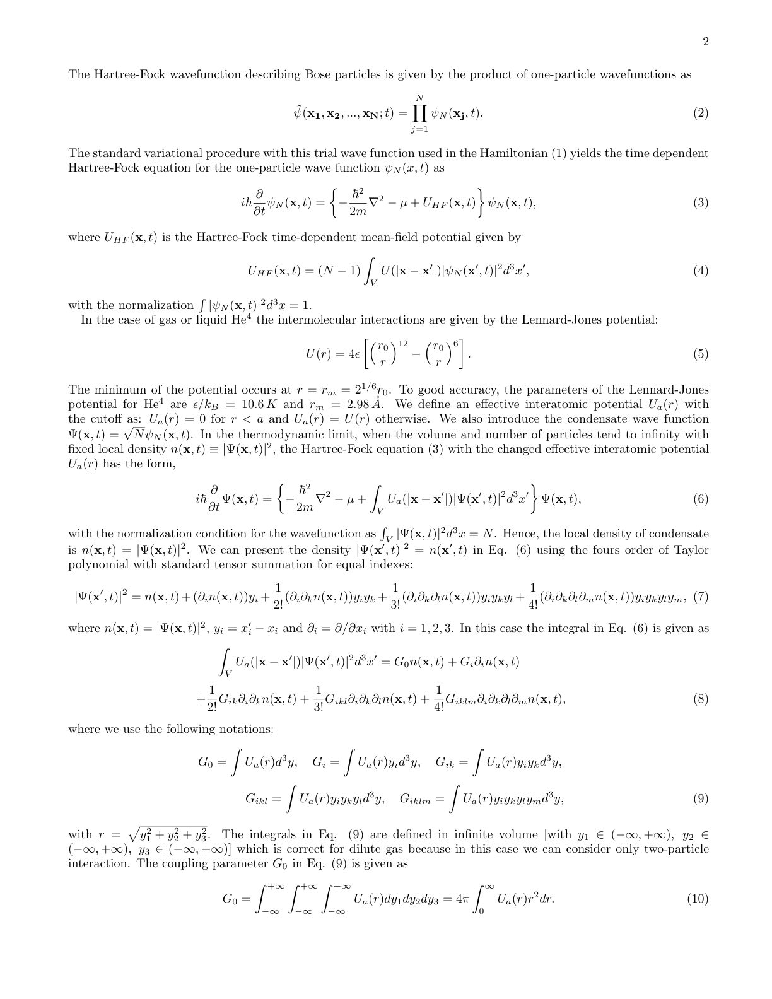
<figcaption class="paper-figure-caption"><b>Fig 1.</b> Low-resolution page preview, page 2</figcaption>
</figure>
<figure class="paper-figure-card">
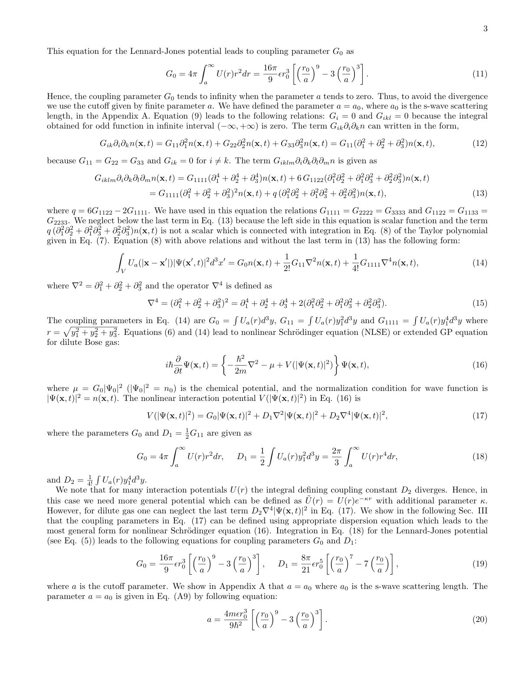
<figcaption class="paper-figure-caption"><b>Fig 2.</b> Low-resolution page preview, page 3</figcaption>
</figure>
<figure class="paper-figure-card">
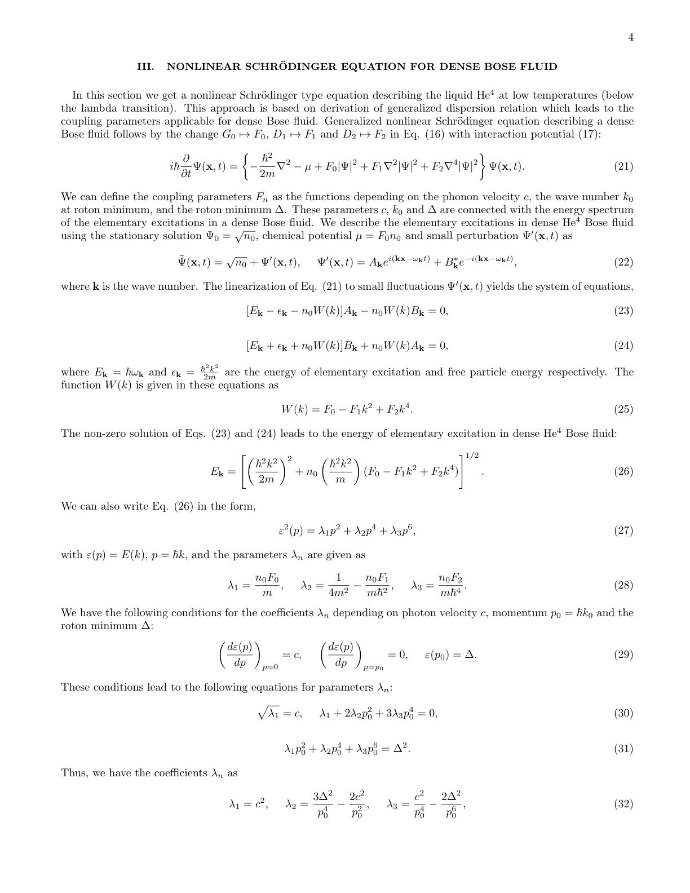
<figcaption class="paper-figure-caption"><b>Fig 3.</b> Low-resolution page preview, page 4</figcaption>
</figure>
<figure class="paper-figure-card">
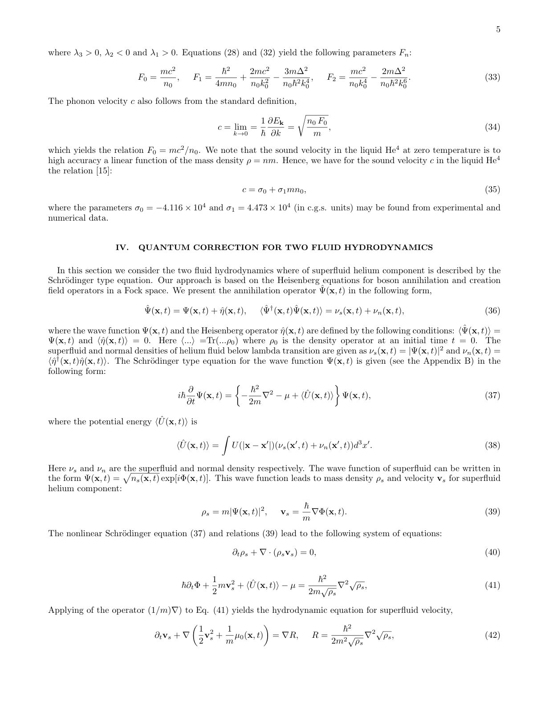
<figcaption class="paper-figure-caption"><b>Fig 4.</b> Low-resolution page preview, page 5</figcaption>
</figure>
<figure class="paper-figure-card">
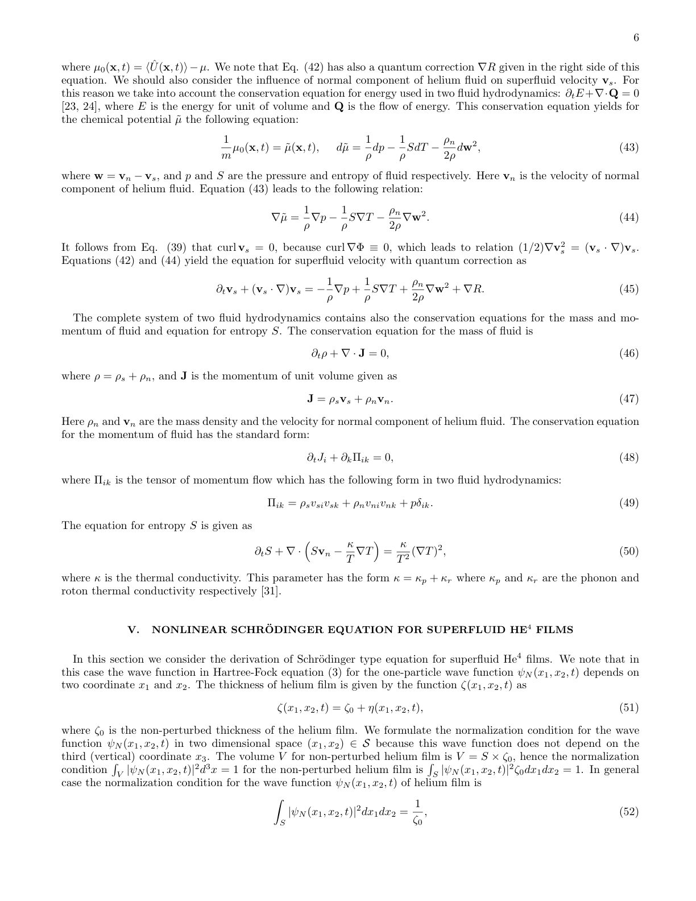
<figcaption class="paper-figure-caption"><b>Fig 5.</b> Low-resolution page preview, page 6</figcaption>
</figure>
</div>

<p><strong>Summary.</strong> This paper develops generalized nonlinear Schrödinger equations to describe the quantum dynamics of Bose fluids, including dense Bose gases and superfluid Helium-4. By linearizing these equations, the authors successfully derive the characteristic phonon-roton dispersion relation for superfluid films. The work provides a comprehensive theoretical framework connecting mean-field theory to observable excitation spectra in quantum fluids.</p>
<p><strong>Why it may be interesting.</strong> This work is highly relevant as it applies advanced mean-field quantum field theory techniques (NLSE) to model superfluid dynamics, which is a cornerstone topic in AMO physics and quantum gases research.</p>
<details>
<summary>Detailed structure</summary>
<p><strong>Main problem.</strong> The paper derives and applies generalized nonlinear Schrödinger equations (NLSE) to model the dynamics of Bose fluids, specifically dense Bose gas and superfluid Helium-4 films at low temperatures.</p>
<p><strong>Main result.</strong> The analysis yields the phonon-roton dispersion relation for superfluid He4 films and provides generalized NLSE forms applicable to both dilute and dense Bose fluids.</p>
<p><strong>Method.</strong> The methodology involves using the Hartree-Fock time-dependent mean-field theory, linearizing the resulting NLSE to study elementary excitations, and deriving coupled hydrodynamic equations for the two-fluid model.</p>
<p><strong>Model / system.</strong> The system under study includes dilute Bose gases, dense Bose fluids (like liquid He4), and superfluid He4 films. The theoretical framework relies on deriving and analyzing nonlinear Schrödinger equations derived from many-body Hamiltonians.</p>
<p><strong>Key observables.</strong> Phonon-roton dispersion relation, superfluid velocity corrections, and the energy spectrum of elementary excitations $\epsilon(p)$.</p>
<p><strong>Important parameters / regimes.</strong> Phonon velocity ($c$), roton minimum energy ($\Delta$), and the coupling parameters ($F_n$ or $\lambda_n$) derived from these physical constants.</p>
<p><strong>Assumptions / limitations.</strong> Approximations include neglecting higher-order gradient terms in the dilute gas limit and assuming the validity of the mean-field approximation for the Bose fluid.</p>
<p><strong>Figures summary.</strong> The notes detail the derivation of dispersion relations $\epsilon(p)$ and the final form of the energy spectrum $E(k)$ as a polynomial in $k^2$, relating it to the coefficients $G, eta, \sigma$.</p>
<p><strong>Paper structure.</strong> The paper progresses from deriving the generalized NLSE for dilute Bose gas, extending it to dense Bose fluids, then analyzing the two-fluid hydrodynamics for superfluid He4, and finally focusing on the specific NLSE and dispersion relation for superfluid He4 films.</p>
</details>
<details>
<summary>Abstract</summary>
<p>We have derived the nonlinear Schrodinger equation generalizing the Gross-Pitaevskii (GP) equa tion for dilute Bose gas. The derivation is based on the Hartree-Fock time-dependent mean-field theory with an arbitrary intermolecular interaction potential. It is shown that obtained nonlinear Schrodinger equation with appropriate redefinition of coefficients can be used for description of dense Bose fluid at low temperatures. We also present the Schrodinger type equation describing the superfluid component of helium in two fluid hydrodynamics. This approach leads to quantum correction for superfluid component of velocity in two fluid hydrodynamics. We also have derived the nonlinear Schrodinger equation for superfluid He4 film at low temperatures. It is shown that this Schrodinger type equation for superfluid He4 film leads to phonon-roton dispersion relation for elementary excitation at low temperatures.</p>
</details>
<p><sub><a href="#top">↑ back to top</a></sub></p>

<p><a id="paper-2605.31350"></a></p>
<h3 id="optimisation-and-precision-tuning-of-localised-surface-plasmon-resonance-in-aufon-systems"><a href="http://arxiv.org/abs/2605.31350v1">Optimisation and Precision Tuning of Localised Surface Plasmon Resonance in AuFON Systems</a></h3>
<p><strong>Authors:</strong> Luis Alfonso Guerra Hernández, Osmar Gil Salas, Jorge Enrique Rueda Parada, Alejandro Fainstein, Andrés Alejandro Reynoso<br>
<strong>Type:</strong> both · <strong>Category:</strong> other · <strong>PDF:</strong> <a href="https://arxiv.org/pdf/2605.31350v1">https://arxiv.org/pdf/2605.31350v1</a><br>
<strong>Analysis basis:</strong> full PDF text, analyzed in chunks
<strong>Topic relevance:</strong> <code>analog quantum simulation</code> <strong>1/5</strong> · <code>interference shaping light</code> <strong>1/5</strong> · <code>quantum optics experiment</code> <strong>1/5</strong></p>
<div class="figure-strip-hint">↔ Scroll figures horizontally</div>
<div class="paper-figures-scroll">
<figure class="paper-figure-card">
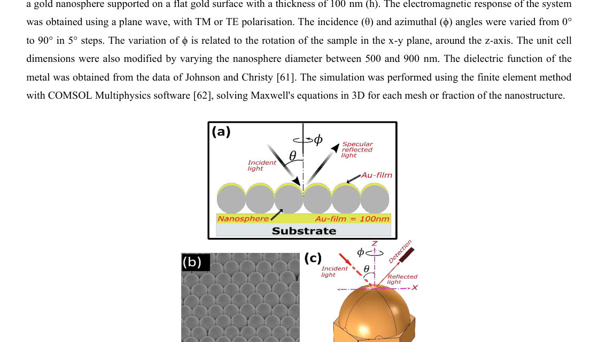
<figcaption class="paper-figure-caption"><b>Fig 1.</b> Fig. 1. (a) Schematic of the optical reflectivity, where the incident light interacts with an AuFON nanostructured system. (b) High-resolution SEM image of a typical AuFON nanostructure with polystyrene nanospheres of 500 nm in diameter. (c) Unit cell of the simulated nanostructured system. The plane wave with TM or TE polarisation is incident on the metallic nanostructure. The incidence (θ) and azimuthal (ϕ) angles can be varied in the simulation, as well as the dimensions of the nanostructure.</figcaption>
</figure>
<figure class="paper-figure-card">
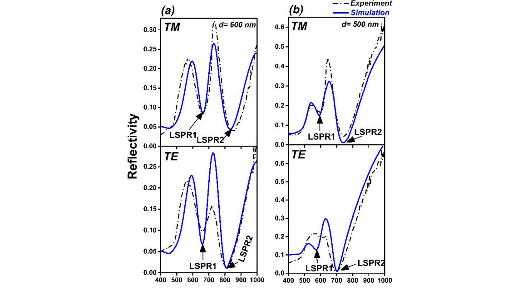
<figcaption class="paper-figure-caption"><b>Fig 2.</b> Fig. 2. Simulation and experimental results of the spectral response of localised plasmonic modes in AuFON systems for TM (top) and TE (bottom) polarisations; in (a) for a 600 nm diameter sample and in (b) for a 500 nm diameter sample. The incidence angle (θ) was 25°, and the azimuthal angle (ϕ) was 0°.</figcaption>
</figure>
<figure class="paper-figure-card">
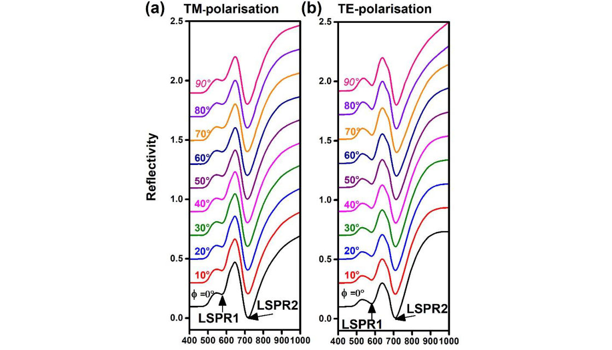
<figcaption class="paper-figure-caption"><b>Fig 3.</b> Fig. 3. Simulation of the plasmonic response for a 500 nm diameter AuFON sample, for TM polarisation (panel (a)) and TE polarisation (panel (b)). The incidence angle was fixed at θ=25°, and ϕ was varied from 0° to 90° in 10° increments. The curves are vertically shifted by 0.2 for clarity. The in-plane dependence with the angle ϕ of the plasmonic response for a 500 nm diameter sample under TM polarisation (panel</figcaption>
</figure>
<figure class="paper-figure-card">

<figcaption class="paper-figure-caption"><b>Fig 4.</b> Fig. 4. Experimental results of the plasmonic response for a 500 nm diameter AuFON sample, for TM polarisation (panel (a)) and TE polarisation (panel (b)). The angle of incidence was fixed at 25°, and ϕ was varied from 0° to 90°. Each reflectivity curve was shifted vertically for clarity. Figure 5 shows simulated results of the spectral response of a 500 nm diameter AuFON nanostructured system, with TE</figcaption>
</figure>
<figure class="paper-figure-card">

<figcaption class="paper-figure-caption"><b>Fig 5.</b> Fig. 5. Simulated spectral response for a 500 nm diameter AuFON sample with different values of θ. (a) Optical reflectivity, and (b) the associated average electric field amplitude. For these results, ϕ=25° and TE polarisation were used. The curves are vertically shifted by 0.3 for clarity.</figcaption>
</figure>
</div>

<p><strong>Summary.</strong> This work characterizes and optimizes the plasmonic properties of Au-film on nanosphere (AuFON) systems using a combination of advanced optical measurements and 3D electromagnetic simulations. By systematically varying parameters like nanosphere size and light polarization, the authors demonstrate precise control over the LSPR resonance energy. This tunability makes the AuFON platform highly promising for developing sensitive optical sensors for molecular detection.</p>
<p><strong>Why it may be interesting.</strong> While focused on classical electromagnetism, the strong field enhancement and resonance phenomena are foundational to understanding light-matter interaction in nanoscale systems, which has parallels in cavity QED and quantum optics.</p>
<details>
<summary>Detailed structure</summary>
<p><strong>Main problem.</strong> The paper aims to optimize and precisely tune the Localised Surface Plasmon Resonance (LSPR) in Gold-film on nanosphere (AuFON) systems to enhance optical signal amplification for molecular detection.</p>
<p><strong>Main result.</strong> The LSPR resonance energy is highly dependent on the nanosphere diameter and polarization, with the LSPR2 mode showing the highest electric field intensification capacity for sensing applications.</p>
<p><strong>Method.</strong> The study combines experimental characterization using variable-angle spectroscopic ellipsometry with detailed numerical simulations solving Maxwell's equations in 3D using the finite element method.</p>
<p><strong>Model / system.</strong> The physical system is Au-film deposited on polystyrene nanosphere arrays (AuFON). The analysis involves modeling the interaction of incident light (varying in angle, polarization, and wavelength) with the plasmonic nanostructure.</p>
<p><strong>Key observables.</strong> Resonance energies of LSPR modes (LSPR1 and LSPR2), spectral reflectivity response, and the spatial distribution/amplitude of the electric field.</p>
<p><strong>Important parameters / regimes.</strong> Nanosphere diameter (500-900 nm), metal film thickness ($\approx 140$ nm), angle of incidence ($  heta$), and incident light polarization (TM/TE).</p>
<p><strong>Assumptions / limitations.</strong> The simulation relies on the dielectric function provided by Johnson and Christy, and the analysis assumes good ordering of the nanosphere array.</p>
<p><strong>Figures summary.</strong> Figures illustrate the spectral response (reflectivity) for varying diameters and polarizations, and show the dependence of resonance energy on the azimuthal angle ($\phi$) and the angle of incidence ($    heta$).</p>
<p><strong>Paper structure.</strong> The paper systematically characterizes the LSPR modes by varying key parameters (diameter, angle, polarization) through both simulation and experiment, culminating in an optimized understanding of the system's tunability for sensing.</p>
</details>
<details>
<summary>Abstract</summary>
<p>Metal film on nanosphere (MFON) plasmonic systems have emerged as nanostructures with useful properties for molecular detection. This work presents the optimisation and discussion of the characterisation results of Au-film on nanosphere (AuFON) systems. Through experiments and numerical simulations, the resonance energies of localised surface plasmon modes and the spatial distribution of light on the nanostructured surface were identified. The results highlight the dependence of these modes on changes in nanostructure dimensions and the optical conditions of the incident radiation, thereby optimising the amplification of optical signals for applications in molecular detection.</p>
</details>
<p><sub><a href="#top">↑ back to top</a></sub></p>

<p><a id="paper-2605.31501"></a></p>
<h3 id="kohn-luttinger-superconductivity-of-weyl-fermi-arcs-in-ptbimath717math"><a href="http://arxiv.org/abs/2605.31501v1">Kohn-Luttinger Superconductivity of Weyl Fermi Arcs in PtBi$_2$</a></h3>
<p><strong>Authors:</strong> Reuel Dsouza, Nikolaos Parthenios, Brian M. Andersen, Morten H. Christensen<br>
<strong>Type:</strong> theory · <strong>Category:</strong> strongly correlated electrons · <strong>PDF:</strong> <a href="https://arxiv.org/pdf/2605.31501v1">https://arxiv.org/pdf/2605.31501v1</a><br>
<strong>Analysis basis:</strong> full PDF text, analyzed in chunks
<strong>Topic relevance:</strong> <code>Keldysh / 2PI / non-Gaussian methods</code> <strong>1/5</strong> · <code>analog quantum simulation</code> <strong>1/5</strong></p>
<div class="figure-strip-hint">↔ Scroll figures horizontally</div>
<div class="paper-figures-scroll">
<figure class="paper-figure-card">

<figcaption class="paper-figure-caption"><b>Fig 1.</b> FIG. 1. Phenomenological model. (a) Phase diagram of the 12-patch model assuming g0◦&gt; 0. To visualize the parameter space we additionally set w1 60◦= w2 60◦. The re- gion marked ’No solution’ is characterized by the absence of a positive eigenvalue in the 12-patch model. (b) Electronic interactions gθ and wθ of the 12-patch model. These corre- spond to intra- and inter-chirality scattering processes with fermionic indistinguishability taken into account.</figcaption>
</figure>
<figure class="paper-figure-card">

<figcaption class="paper-figure-caption"><b>Fig 2.</b> FIG. 2. Electronic structure of minimal model. (a) Top view of the bulk Brillouin zone (BZ) with 12 Weyl points. Cir- cles/crosses denote Weyl points above/below the kz = 0 plane with blue being positive chirality and red negative chirality. (b) Fermi arcs at E = 0 on the surface BZ with the projected Weyl points colored green and brown. (c) Band structure for the slab geometry along the Γ −M −K −Γ path.</figcaption>
</figure>
<figure class="paper-figure-card">

<figcaption class="paper-figure-caption"><b>Fig 3.</b> FIG. 4. Kohn-Luttinger phase diagram and supercon- ducting order parameters. (a) Symmetry of the supercon- ducting order parameter as a function of U, J/U and µ, the chemical potential relative to the Weyl point. Near the Weyl point, the i-wave state is dominant, while the nodal s-wave state becomes increasingly favored as the Fermi level moves away from the Weyl point. Superconducting order parame- ters appearing in the phase diagram: (b) s-wave, (c) nodal s-wave, and (d) i-wave.</figcaption>
</figure>
</div>

<p><strong>Summary.</strong> This theoretical work calculates the superconducting instability in the Weyl semimetal PtBi2 using the Kohn-Luttinger mechanism. By analyzing the pairing interaction on the topological surface Fermi arcs, the authors predict that the superconducting state is most likely an i-wave symmetry. This provides a microscopic mechanism for observing topological superconductivity in such materials.</p>
<p><strong>Why it may be interesting.</strong> While focused on condensed matter superconductivity, the use of symmetry analysis (noncentrosymmetry, topological features) and pairing mechanisms driven by repulsive interactions connects to general many-body physics concepts relevant to open quantum systems.</p>
<details>
<summary>Detailed structure</summary>
<p><strong>Main problem.</strong> The study investigates the nature and symmetry of unconventional superconductivity arising from electron-mediated pairing interactions in Weyl semimetals.</p>
<p><strong>Main result.</strong> The Kohn-Luttinger approach predicts a dominant nodal i-wave superconducting state in a large region of the phase diagram for PtBi2, suggesting a mechanism for topological superconductivity on the surface.</p>
<p><strong>Method.</strong> The authors use the Kohn-Luttinger approach, calculating the effective pairing interaction by dressing the bare Coulomb repulsion and solving the linearized gap equation projected onto the Weyl Fermi arcs.</p>
<p><strong>Model / system.</strong> The physical system is the noncentrosymmetric Weyl semimetal PtBi2. The model employs a phenomenological patch model derived from the surface Weyl Fermi arcs, built upon a tight-binding Hamiltonian describing the bulk electronic structure.</p>
<p><strong>Key observables.</strong> Superconducting order parameter symmetry (i-wave, s-wave), the superconducting gap structure, and the phase diagram dependence on interaction parameters.</p>
<p><strong>Important parameters / regimes.</strong> Bare repulsive interaction strength (U), chemical potential ($\mu$), and various hopping/coupling parameters ($\alpha, \gamma$).</p>
<p><strong>Assumptions / limitations.</strong> The superconductivity instability is assumed to be driven purely by Coulomb repulsion, and the model simplifies the complex surface physics into a patch approximation.</p>
<p><strong>Figures summary.</strong> Figures illustrate the phase diagram showing regions for different superconducting symmetries (s-wave, i-wave) and schematic representations of the electronic interactions governing the pairing.</p>
<p><strong>Paper structure.</strong> The paper first establishes the electronic structure of the Weyl semimetal using a tight-binding model, then applies the Kohn-Luttinger formalism to derive the effective pairing interaction, culminating in a phase diagram analysis of the superconducting symmetry.</p>
</details>
<details>
<summary>Abstract</summary>
<p>Recent experimental observations in the noncentrosymmetric Weyl semimetal PtBi$_2$ indicate unconventional superconductivity hosted by topological surface states -- Weyl Fermi arcs -- with a node at the center of each arc. Focusing on these Fermi arcs, we calculate the electronically mediated pairing interaction using a Kohn-Luttinger approach and find that, in a large region of the phase diagram, the leading superconducting instability has an $i$-wave symmetry featuring precisely such an intra-arc node. We study the dependence of the leading superconducting instabilities on electronic interaction parameters and chemical potential and show that the $i$-wave state is robust to changes in the model parameters. Our results provide a possible mechanism for the observation of topological $i$-wave superconductivity on the surface of PtBi$_2$ and may have implications for the broader landscape of superconducting instabilities arising from repulsive interactions on the surfaces of Weyl semimetals.</p>
</details>
<p><sub><a href="#top">↑ back to top</a></sub></p>

<p><a id="paper-2605.30773"></a></p>
<h3 id="saturated-and-anisotropic-magnetostriction-in-an-altermagnet"><a href="http://arxiv.org/abs/2605.30773v1">Saturated and Anisotropic Magnetostriction in an Altermagnet</a></h3>
<p><strong>Authors:</strong> Zhiyuan Duan, Qiyun Xu, Peixin Qin, Li Liu, Guojian Zhao, Yuzhou He, Xiaoyang Tan, Sixu Jiang, Jingyu Li, Xiaoning Wang, Qinghua Zhang, Wenhui Duan, Yong Xu, Ziang Meng, Peizhe Tang, Chengbao Jiang, Zhiqi Liu<br>
<strong>Type:</strong> both · <strong>Category:</strong> other · <strong>PDF:</strong> <a href="https://arxiv.org/pdf/2605.30773v1">https://arxiv.org/pdf/2605.30773v1</a><br>
<strong>Analysis basis:</strong> full PDF text, analyzed in chunks
<strong>Topic relevance:</strong> <code>analog quantum simulation</code> <strong>1/5</strong> · <code>spintronics-quantum-optics interface</code> <strong>1/5</strong></p>
<div class="figure-strip-hint">↔ Scroll figures horizontally</div>
<div class="paper-figures-scroll">
<figure class="paper-figure-card">

<figcaption class="paper-figure-caption"><b>Fig 1.</b> Figure 4b shows the magnetostriction curves measured at 50 K, allowing a direct comparison</figcaption>
</figure>
<figure class="paper-figure-card">

<figcaption class="paper-figure-caption"><b>Fig 2.</b> Figure 4c, the resulting angular-dependent pole figure of saturated magnetostriction (λS) exhibits</figcaption>
</figure>
<figure class="paper-figure-card">

<figcaption class="paper-figure-caption"><b>Fig 3.</b> Figure 1. Synthesis, Morphology, and Structural Analysis of MnTe Single Crystals. (a) Illustration of the</figcaption>
</figure>
<figure class="paper-figure-card">

<figcaption class="paper-figure-caption"><b>Fig 4.</b> Figure 2. Atomic-resolution imaging and elemental analysis of MnTe single crystals. (a,b) STEM-HAADF</figcaption>
</figure>
<figure class="paper-figure-card">

<figcaption class="paper-figure-caption"><b>Fig 5.</b> Figure 3. Electronic Transport and Magnetic Properties of MnTe. (a) Temperature-dependent resistance (R) of</figcaption>
</figure>
</div>

<p><strong>Summary.</strong> This work reports the discovery of a saturated and anisotropic magnetostriction effect in the altermagnet MnTe. By combining detailed magnetometry and strain measurements with first-principles calculations, the authors demonstrate that this effect arises from a symmetry-allowed coupling between strain and the Néel order parameter. This challenges traditional understanding of AFM magnetostriction and highlights altermagnets as promising materials for magnetostrictive applications.</p>
<p><strong>Why it may be interesting.</strong> While focused on condensed matter magnetism, the study's rigorous coupling of electronic structure (DFT) to macroscopic mechanical response (magnetostriction) provides a model for understanding coupled order parameters, which has parallels in quantum materials research.</p>
<details>
<summary>Detailed structure</summary>
<p><strong>Main problem.</strong> The study investigates the magnetostriction, a coupling between magnetism and mechanics, specifically in antiferromagnets (AFMs) and the emerging class of altermagnets.</p>
<p><strong>Main result.</strong> The authors report observing a saturated and highly anisotropic magnetostriction in the altermagnet MnTe, which is theoretically linked to symmetry-allowed coupling between elastic strain and the Néel order parameter.</p>
<p><strong>Method.</strong> The research combines extensive experimental measurements (magnetostriction, magnetization, resistivity) with first-principles density functional theory (DFT) calculations and Landau theory analysis.</p>
<p><strong>Model / system.</strong> The physical system is the MnTe single crystal, which exhibits altermagnetic properties. The theoretical framework involves modeling the total free energy, including lattice and magnetoelastic terms, based on the material's crystal symmetry ($D_{6h}$).</p>
<p><strong>Key observables.</strong> Saturated magnetostriction ($\lambda_S$), two-fold symmetry anisotropy in the (0001) plane, Néel transition temperature ($\sim 307$ K), and the spin-flop field ($\sim 0.7$ T).</p>
<p><strong>Important parameters / regimes.</strong> Elastic coefficients ($c_{11}, c_{12}$), coupling strengths ($\lambda_{1N0}^2, \lambda_{2N0}^2$), and the saturation field ($\sim 0.7$ T).</p>
<p><strong>Assumptions / limitations.</strong> The analysis assumes that the saturated magnetostriction is dominated by the spin-flop-related spin reorientation and that the magnetoelastic coupling can be described by symmetry-allowed terms.</p>
<p><strong>Figures summary.</strong> Figures detail crystal growth, structural characterization (XRD, STEM), magnetic transitions (M vs T, M vs H), and most critically, the angular dependence of the saturated magnetostriction via pole figures.</p>
<p><strong>Paper structure.</strong> The paper follows a structure of experimental characterization (synthesis, structure, magnetic transitions) leading to the core measurement of magnetostriction, which is then theoretically explained using DFT and Landau theory to explain the observed saturation and anisotropy.</p>
</details>
<details>
<summary>Abstract</summary>
<p>Magnetostriction, a fundamental phenomenon bridging magnetism and mechanics, has enabled a broad spectrum of applications. For almost two centuries, it has been mainly investigated for ferromagnets. Regarding the magnetostriction of antiferromagnets (AFMs), limitedly known examples for both conventional collinear AFMs and noncollinear AFMs predominantly exhibit non-saturating magnetic-field dependence. Herein, we report an easily saturated magnetostriction effect in a prototypical altermagnet - MnTe, which is an emerging class of collinear AFMs with special crystal symmetries. For high-quality MnTe single crystals, the magnetostriction saturates under a moderate field of ~0.7 T with an intriguing two-fold-symmetry anisotropy. First-principles calculations reveal that the saturated and anisotropic magnetostriction originates from symmetry-allowed coupling between elastic strain and its Néel order parameter. These findings break the traditional wisdom on antiferromagnetic magnetostriction.</p>
</details>
<p><sub><a href="#top">↑ back to top</a></sub></p>

<p><a id="paper-2605.31009"></a></p>
<h3 id="explicit-turn-resolution-with-anisotropic-homogenisation-for-efficient-3d-magneto-thermal-finite-element-simulation-of-large-scale-no-insulation-hts-magnets"><a href="http://arxiv.org/abs/2605.31009v1">Explicit Turn Resolution with Anisotropic Homogenisation for Efficient 3D Magneto-Thermal Finite-Element Simulation of Large-Scale No-Insulation HTS Magnets</a></h3>
<p><strong>Authors:</strong> Louis Denis, Erik Schnaubelt, Julien Dular, Mariusz Wozniak, Benoît Vanderheyden, Christophe Geuzaine<br>
<strong>Type:</strong> theory · <strong>Category:</strong> numerical methods · <strong>PDF:</strong> <a href="https://arxiv.org/pdf/2605.31009v1">https://arxiv.org/pdf/2605.31009v1</a><br>
<strong>Analysis basis:</strong> full PDF text, analyzed in chunks
<strong>Topic relevance:</strong> <code>methods for driven-dissipative</code> <strong>1/5</strong></p>
<div class="figure-strip-hint">↔ Scroll figures horizontally</div>
<div class="paper-figures-scroll">
<figure class="paper-figure-card">

<figcaption class="paper-figure-caption"><b>Fig 1.</b> Figure 1: Reference model visualised on a conceptual pancake coil geometry. Top view (left) and coil cross- section (center), along a single CC turn cross-section (right). Copper terminals Ωc,t are shown in brown, while the homogenised bare CC turns Ωc,b are shown in light gray. The terminal CLs Γcl,t are shown in green, while the turn-to-turn CLs Γcl,w are shown in blue. The winding longitudinal entries Γw,0 are shown in dark gray. The global and local winding coordinates are shown in the left panel, as well as the turn index convention. The homogenisation of the layered structure of the CC into effective anisotropic material properties in Ωc,b is summarised in the right panel, with the...</figcaption>
</figure>
<figure class="paper-figure-card">

<figcaption class="paper-figure-caption"><b>Fig 2.</b> Figure 2: Principle of the proposed EXTRA homogenisation method on a conceptual HTS magnet cross- section containing a localised Jc defect represented in red. (Left) In the reference model, all bare CC turns Ωc,b, terminal Γcl,t and turn-to-turn Γcl,w CLs are resolved. (Right) In the EXTRA homogenised model, specific resolved turns Ωc,r (in contact with the terminals and the Jc defect) are described with their resolved effective material properties, while all other turns are merged into homogenised turns Ωc,h that account for the T2TCL properties. Terminal CLs Γcl,t, as well as T2TCLs Γcl,r between the resolved turns, are explicitly resolved. The T2TCLs Γcl,p between homogenised and...</figcaption>
</figure>
<figure class="paper-figure-card">

<figcaption class="paper-figure-caption"><b>Fig 3.</b> Figure 3: Homogenisation of the radial electric resistivity of the T2TCLs illustrated with the EXTRA homogenised method on a conceptual pancake coil made of 10 turns. Top view of the magnet (left), with a localised Jc defect in turn 6, and corresponding normalised radial resistivity distribution (right) in the turn-resolved reference (ref.) and EXTRA homogenised (hom.) models. Turns {0,5,6,7,9} are resolved (in light gray), while turns {1,2,3,4,8} are homogenised (in dark gray). The distinction between the terminal CLs (solid green lines), the resolved T2TCLs (solid blue lines) and the partially-homogenised T2TCLs (dashed violet lines) is similar to what is shown in Fig. 2. The top view...</figcaption>
</figure>
<figure class="paper-figure-card">

<figcaption class="paper-figure-caption"><b>Fig 4.</b> Figure 4: Visualisation of the normal vector ⃗n on the reference (left) and EXTRA homogenised (right) meshes. The normal vector is defined as a piecewise constant vector along the discretised winding mesh, and it does not vary along the z-direction. The reference mesh is shown with dashed lines next to the homogenised mesh with solid lines. The transition layer between neighbouring effective turns of different thicknesses is shown (right). In this figure, the meshes are significantly coarser along the longitudinal direction than practical meshes, for clearer visibility.</figcaption>
</figure>
<figure class="paper-figure-card">

<figcaption class="paper-figure-caption"><b>Fig 5.</b> Figure 5: Source current Isrc during the sudden discharge test and central axial magnetic flux density Bz computed with the reference and EXTRA homogenised (N e t = 50 and N e t = 10) models, with Rcl,t = 10−6 Ωm2. The right figure focuses on the quasi-exponential decay during the discharge. Both figures share the same legend.</figcaption>
</figure>
</div>

<p><strong>Summary.</strong> This paper introduces the EXTRA homogenisation method, a novel technique for performing 3D Finite-Element simulations of massive HTS magnets. It efficiently reduces computational load by homogenizing most turns while explicitly resolving critical areas near contacts or defects. This allows researchers to simulate unprecedentedly large magnets while maintaining high accuracy compared to full turn-resolved models.</p>
<p><strong>Why it may be interesting.</strong> While focused on superconducting magnets, the core contribution is a sophisticated, multi-scale numerical technique (anisotropic homogenization combined with adaptive resolution) that is highly relevant to developing efficient solvers for complex, multi-physics systems in condensed matter theory.</p>
<details>
<summary>Detailed structure</summary>
<p><strong>Main problem.</strong> Developing an efficient and accurate 3D Finite-Element (FE) simulation method for the magneto-thermal behavior of large-scale No-Insulation (NI) High-Temperature Superconducting (HTS) magnets.</p>
<p><strong>Main result.</strong> The proposed EXTRA homogenisation method achieves significant computational speedups (up to 13x) while maintaining accuracy, enabling simulations of magnets with 10,000 turns, which was previously computationally infeasible.</p>
<p><strong>Method.</strong> The method combines anisotropic homogenization of turn-to-turn contact layers (T2TCLs) with the explicit resolution of critical turns (inner/outermost) to balance computational cost and physical accuracy.</p>
<p><strong>Model / system.</strong> The system is a large-scale HTS magnet, modeled as stacked pancake coils. The simulation solves coupled magneto-thermal equations in 3D, accounting for current distribution, heat generation, and material properties.</p>
<p><strong>Key observables.</strong> AC losses, temperature distributions, current density ($\vec{J}$), and magnetic field ($\vec{H}$) evolution during operation and thermal runaway.</p>
<p><strong>Important parameters / regimes.</strong> Number of turns (up to 10,000), contact resistance ($R_{cl}$), and local critical current density ($J_c$).</p>
<p><strong>Assumptions / limitations.</strong> The method relies on the Surface Contact Approximation (SCA) for homogenized layers and assumes that local defects only require explicit resolution of neighboring turns.</p>
<p><strong>Figures summary.</strong> Figures illustrate the conceptual geometry of the coil, the principle of separating turns into homogenized and resolved sections, and convergence studies comparing the new method against turn-resolved reference models.</p>
<p><strong>Paper structure.</strong> The paper introduces the physical challenge, details the mathematical formulation of the coupled FE equations, rigorously derives the EXTRA homogenization procedure by separating turns, validates the method on smaller benchmarks, and concludes with large-scale simulations demonstrating efficiency and accuracy.</p>
</details>
<details>
<summary>Abstract</summary>
<p>No-insulation (NI) and metal-insulation (MI) high-temperature superconducting (HTS) magnets require three-dimensional (3D) models to describe the current distribution around critical current defects. In this work, we design and validate the EXTRA homogenisation method, standing for explicit turn resolution with anisotropic homogenisation method. It allows 3D magneto-thermal finite-element (FE) simulations of large-scale magnets to be performed with high accuracy at a reasonable computational cost. The method combines the anisotropic homogenisation of turn-to-turn contact layers (T2TCLs) and their neighbouring winding turns with the explicit resolution of specific T2TCLs. In particular, the inner- and outermost winding turns and adjacent contact layers are explicitly resolved to properly describe the current distribution near current leads. In addition, the method is able to simulate local $J_{\textrm{c}}$ defects for a broad range of turn-to-turn contact resistances, provided the winding turns and T2TCLs next to the defect are explicitly resolved. For efficiency, the resolved T2TCLs are modelled using the surface contact approximation. The consistency of the proposed method is first verified on a 50-turn single pancake benchmark. It is shown to reproduce AC losses and temperature distributions obtained with a turn-resolved FE reference model, for both nominal operation and during thermal runaway. The computational efficiency of the EXTRA method is demonstrated with the simulation of a stack of three 150-turn pancake coils, for which computation time is reduced by a factor of up to 13 with respect to a turn-resolved FE reference model. Finally, the results of a large-scale 3D FE simulation, currently out of reach of turn-resolved models, are provided for an insert HTS magnet with 10,000 turns. The EXTRA method is open-source and input files to reproduce all results are made available.</p>
</details>
<p><sub><a href="#top">↑ back to top</a></sub></p>

<p><a id="paper-2605.30847"></a></p>
<h3 id="terahertz-electrodynamics-and-kinetic-inductance-of-disordered-titanium-vanadium-alloy-thin-films"><a href="http://arxiv.org/abs/2605.30847v1">Terahertz Electrodynamics and Kinetic Inductance of Disordered Titanium-Vanadium Alloy Thin Films</a></h3>
<p><strong>Authors:</strong> Shekhar Chandra Pandey, Shilpam Sharma, Ashish Khandelwal, M. K. Chattopadhyay<br>
<strong>Type:</strong> both · <strong>Category:</strong> other · <strong>PDF:</strong> <a href="https://arxiv.org/pdf/2605.30847v1">https://arxiv.org/pdf/2605.30847v1</a><br>
<strong>Analysis basis:</strong> full PDF text, analyzed in chunks
<strong>Topic relevance:</strong> <code>Keldysh / 2PI / non-Gaussian methods</code> <strong>1/5</strong></p>
<div class="figure-strip-hint">↔ Scroll figures horizontally</div>
<div class="paper-figures-scroll">
<figure class="paper-figure-card">

<figcaption class="paper-figure-caption"><b>Fig 1.</b> Fig. 1 (a) Three-dimensional plots of the real part of the THz conductivity for the TiV-1 thin film. The dip in the low-frequency region below the TC indicates a superconducting gap in the quasiparticle states. (b) The imaginary part of the conductivity as a function of frequency exhibits</figcaption>
</figure>
<figure class="paper-figure-card">

<figcaption class="paper-figure-caption"><b>Fig 2.</b> Fig. 2 (a) Three-dimensional plots of the real part of the THz conductivity for the TiV-2 thin film. The dip in the low-frequency region below the TC indicates a superconducting gap in the quasiparticle states. (b) The Imaginary part of the conductivity as a function of frequency exhibits a 1/ω dependence and becomes negative at higher frequencies. (c) Temperature dependence of the real and imaginary parts of THz conductivity of TiV-2 measured at 0.2 THz.</figcaption>
</figure>
<figure class="paper-figure-card">

<figcaption class="paper-figure-caption"><b>Fig 3.</b> Fig. 3 (a) and (d) Frequency dependence of the normalized real part of complex conductivity at different temperatures below the TC for TiV-1 and TiV-2 respectively. (b) and (e) Normalized real part of complex conductivity of TiV-1 and TiV-2 respectively, at 2 K, along with the M-B fits. (c) and (f) Normalized imaginary part of complex conductivity of TiV-1 and TiV-2 respectively at 2 K, along with the corresponding M-B fit.</figcaption>
</figure>
<figure class="paper-figure-card">

<figcaption class="paper-figure-caption"><b>Fig 4.</b> Fig. 4 Temperature dependence of the magnetic penetration depth: (a, b) The inverse square of the penetration depth, λ-2(T), evaluated at 0.2 THz for TiV-1 and TiV-2, respectively. The solid lines denote theoretical fits to the experimental data using the dirty-limit BCS formulation. (c, d) The absolute penetration depth plotted as a function of temperature for TiV-1 and TiV-2. The solid lines represent fits based on the empirical Gorter-Casimir two-fluid model.</figcaption>
</figure>
</div>

<p><strong>Summary.</strong> This paper uses $  ext{THz-TDS}$ to study the electrodynamics of disordered $  ext{TiV}$ superconducting thin films. By analyzing the complex conductivity and kinetic inductance, the authors show that structural disorder offers a simple, tunable method to control superconducting properties. These findings position $  ext{TiV}$ alloys as excellent candidates for next-generation quantum detectors.</p>
<p><strong>Why it may be interesting.</strong> The work bridges condensed matter theory (superconductivity, disorder effects) with advanced experimental techniques ($  ext{THz-TDS}$), providing quantitative data on superconducting response relevant to quantum sensing.</p>
<details>
<summary>Detailed structure</summary>
<p><strong>Main problem.</strong> The study investigates how structural disorder affects the high-frequency electrodynamic response and kinetic inductance of superconducting thin films, which is vital for advanced quantum detectors.</p>
<p><strong>Main result.</strong> The research demonstrates that structural disorder in $    ext{Ti}<em 60>{40}    ext{V}</em>$ alloys can be systematically tuned to control the inductive response, establishing these alloys as promising materials for kinetic inductance detectors.</p>
<p><strong>Method.</strong> Terahertz time-domain spectroscopy ($   ext{THz-TDS}$) was used to measure complex conductivity and penetration depth, which were then analyzed using the Mattis-Bardeen formalism and BCS theory.</p>
<p><strong>Model / system.</strong> The physical system is disordered Titanium-Vanadium ($  ext{TiV}$) alloy thin films. The analysis employs theoretical models like the Mattis-Bardeen formalism and the Gorter-Casimir two-fluid model to describe the superconducting electrodynamics.</p>
<p><strong>Key observables.</strong> Complex conductivity ($\sigma_1, \sigma_2$), penetration depth ($\lambda$), superfluid density ($ ext{n}_s$), and kinetic inductance ($ ext{L}_K$).</p>
<p><strong>Important parameters / regimes.</strong> Superconducting energy gaps ($\Delta$), critical temperature ($  ext{T}_C$), and the ratio $2\Delta(0)/k_B T_C$ (indicating strong coupling).</p>
<p><strong>Assumptions / limitations.</strong> The Mattis-Bardeen formalism is used for fitting, though deviations are noted in the low-frequency sub-gap regime.</p>
<p><strong>Figures summary.</strong> Figures show temperature and frequency dependence of $\sigma_1$ and $\sigma_2$, illustrating the suppression of $\sigma_1$ and the characteristic $1/\omega$ inductive response in $\sigma_2$ below $ ext{T}_C$.</p>
<p><strong>Paper structure.</strong> The paper follows a structure of problem definition, experimental measurement ($   ext{THz-TDS}$), theoretical modeling (M-B formalism, BCS fitting), and detailed analysis of superconducting parameters ($ ext{L}_K, \Delta,   ext{n}_s$).</p>
</details>
<details>
<summary>Abstract</summary>
<p>Disordered superconductors represent an important area in modern condensed matter physics, where superconductivity survives even in the presence of strong electron scattering and localization effects. Understanding how disorder modifies the high-frequency electrodynamic response is not only important from physics point of view, but is also essential for developing next-generation quantum detectors and superconducting devices. In this work, we investigate the terahertz electrodynamics of disordered Ti40V60 alloy thin films using terahertz time-domain spectroscopy (THz-TDS) to understand the relationship between disorder, quasiparticle dynamics, and kinetic inductance. By analysing the complex conductivity, penetration depth and superfluid response, we show that structural disorder can be systematically used to tune the inductive response while maintaining a robust superconducting phase. Unlike conventional nitride superconductors that require tightly controlled reactive growth conditions, Ti40V60 alloys provide a simpler and more adaptable route for tuning the superconducting energy scales directly through the deposition conditions. These findings establish Ti40V60 alloys as a promising material for kinetic inductance detectors and provide useful insights into the electrodynamics of strongly disordered superconductors.</p>
</details>
<p><sub><a href="#top">↑ back to top</a></sub></p>

<p><a id="paper-2605.30661"></a></p>
<h3 id="wetting-as-an-emergent-property-of-water-reformulating-young-equation-on-molecular-grounds"><a href="http://arxiv.org/abs/2605.30661v1">Wetting as an emergent property of water: reformulating Young equation on molecular grounds</a></h3>
<p><strong>Authors:</strong> Nicolas Loubet, Gustavo Appignanesi<br>
<strong>Type:</strong> theory · <strong>Category:</strong> statistical mechanics · <strong>PDF:</strong> <a href="https://arxiv.org/pdf/2605.30661v1">https://arxiv.org/pdf/2605.30661v1</a><br>
<strong>Analysis basis:</strong> full PDF text, analyzed in chunks
<strong>Topic relevance:</strong> <code>analog quantum simulation</code> <strong>1/5</strong></p>
<div class="figure-strip-hint">↔ Scroll figures horizontally</div>
<div class="paper-figures-scroll">
<figure class="paper-figure-card">

<figcaption class="paper-figure-caption"><b>Fig 1.</b> FIG. 1: Universal molecular description of aqueous wetting. Contact angles for chemically diverse systems plotted as a function of the molecular wetting coefficient ωm. Experimental data for self-assembled monolayers (SAMs) with different functionalization (from apolar to polar groups), together with results for dispersive graphene (with variable Lennard–Jones attractions) and polar silica (with varying polarity), collapse onto a single master curve defined by cos θ = ωm. Inset: Cavitation free energy for a small (methane-like sized) sphere tangent to the surface, −kBT ln P(N = 0), plotted against ωm for graphene and silica, demonstrating a thermodynamic closure linking wetting, adhesion,...</figcaption>
</figure>
<figure class="paper-figure-card">

<figcaption class="paper-figure-caption"><b>Fig 2.</b> FIG. 2: Nanoconfinement, filling, and thermodynamic closure controlled by the molecular wetting coefficient. (a) Minimum stable plate separation Dmin for water confined between two parallel graphene sheets as a function of interaction strength ε. Water density profiles for 70%–9 ˚A and 80%–6.5 ˚A are sketched as insets. The green curve reports ωm for a single graphene surface; the vertical dashed green line (that extends down to the other two panels of the figure) marks the value of ε for which ωm = 0. The color of the symbols indicates the in-plane (2D) diffusion coefficient of confined water, from more mobile (red) to nearly arrested or frozen configurations (violet). (b) Molecular...</figcaption>
</figure>
</div>

<p><strong>Summary.</strong> This work provides a molecular reformulation of wetting theory, moving beyond empirical macroscopic equations like Young's. By introducing a molecular wetting coefficient ($\omega_m$), the authors demonstrate that wetting is an emergent property dictated by water's internal hydrogen-bond energetics. This framework unifies wetting, adhesion, and cavitation into a single, predictive physical principle.</p>
<p><strong>Why it may be interesting.</strong> While focused on classical liquids, the rigorous thermodynamic closure and the development of a universal, microscopic parameter ($\omega_m$) to govern macroscopic phase behavior provides a powerful analogy for understanding emergent order in complex quantum many-body systems.</p>
<details>
<summary>Detailed structure</summary>
<p><strong>Main problem.</strong> The molecular origin of macroscopic wetting descriptions, such as Young's equation, particularly for water, has remained theoretically elusive.</p>
<p><strong>Main result.</strong> Wetting is shown to be an emergent property of water's intrinsic hydrogen-bond energetic scales, unifying wetting, adhesion, and cavitation into a single molecular criterion.</p>
<p><strong>Method.</strong> The authors reformulate wetting using a molecular wetting coefficient ($\omega_m$) derived from microscopic interaction measures ($V_{4S}$) and test this framework using molecular dynamics simulations.</p>
<p><strong>Model / system.</strong> The system involves aqueous interfaces (solid-liquid-vapor, etc.) where the behavior is governed by the energetic cost associated with hydrogen-bond defects in the water network.</p>
<p><strong>Key observables.</strong> Molecular wetting coefficient ($\omega_m$), contact angle ($\cos 	heta$), adhesion work ($W_{adh}$), and cavitation free energy ($\Delta G_{cav}$).</p>
<p><strong>Important parameters / regimes.</strong> The molecular wetting coefficient ($\omega_m$), which quantifies the energetic compensation of HB defects relative to bulk water.</p>
<p><strong>Assumptions / limitations.</strong> The framework assumes that interfacial behavior can be mapped onto the intrinsic energetic scales of the water hydrogen-bond network, allowing for a universal description across different chemistries.</p>
<p><strong>Figures summary.</strong> Figures illustrate that contact angles for diverse surfaces collapse onto a single master curve defined by $\cos 	heta = \omega_m$, and that thermodynamic quantities like cavitation energy show linear closure with $\omega_m$.</p>
<p><strong>Paper structure.</strong> The paper establishes the macroscopic problem (Young's equation), introduces the molecular parameter ($\omega_m$), demonstrates its universality across various surfaces, and finally closes the thermodynamic loop by linking wetting, adhesion, and cavitation via $\omega_m$.</p>
</details>
<details>
<summary>Abstract</summary>
<p>Young equation provides a remarkably successful macroscopic description of wetting, yet its molecular origin (particularly for water) has remained elusive for over two centuries. Here we make the molecular basis of aqueous wetting explicit by reformulating it in terms of a molecular wetting coefficient, omega m, which quantifies how an interface compensates the intrinsic energetic cost of hydrogen-bond defects relative to bulk water. Across a broad and continuous spectrum of hydrophilicities, spanning chemically diverse experimental and model surfaces, macroscopic contact angles collapse onto a single universal master curve when expressed through omega m. This molecular reformulation closes Young and Young-Dupre relations on energetic grounds, establishing a unified and predictive physical link between wetting, adhesion, cavitation, and nanoconfined filling. By anchoring interfacial behavior to waters intrinsic hydrogen-bond energetic scales, our results reveal wetting as an emergent property of water itself, rather than a surface-specific attribute and provide a transferable molecular framework that recalibrates energetic intuition and guides the rational design of aqueous interfaces. (This document is the unedited Author version of a Submitted Manuscript subsequently accepted for publication in J. Am. Chem. Soc. For the published version, which includes a more complete molecular-thermodynamics grounding of the method see the published version)</p>
</details>
<p><sub><a href="#top">↑ back to top</a></sub></p>
<h3 id="other-secondary-papers-5">Other secondary papers (5)</h3>
<details>
<summary>Show other secondary papers</summary>

<p><a id="paper-2605.30760"></a></p>
<h3 id="bending-like-stress-induced-by-solder-joint-under-uniaxial-tensile-testing-in-2g-hts-tapes-impact-and-optimization-approach"><a href="http://arxiv.org/abs/2605.30760v1">Bending-like stress induced by solder joint under uniaxial tensile testing in 2G-HTS tapes: Impact and optimization approach</a></h3>
<p><strong>Authors:</strong> Dean Liu, Yue Wu, Haoliang Xiang, Xiaofen Li, Caida Fu, Chiheng Dong, Yue Zhao<br>
<strong>Type:</strong> both · <strong>Category:</strong> other · <strong>PDF:</strong> <a href="https://arxiv.org/pdf/2605.30760v1">https://arxiv.org/pdf/2605.30760v1</a><br>
<strong>Analysis basis:</strong> full PDF text, analyzed in chunks</p>
<div class="figure-strip-hint">↔ Scroll figures horizontally</div>
<div class="paper-figures-scroll">
<figure class="paper-figure-card">

<figcaption class="paper-figure-caption"><b>Fig 1.</b> Fig. 1 (a) illustrates the uniaxial tensile test results for a short sample of Tape Ⅰ. In this test, the</figcaption>
</figure>
<figure class="paper-figure-card">

<figcaption class="paper-figure-caption"><b>Fig 2.</b> Fig. 1 Uniaxial tensile test and post-mortem characterization of a Tape Ⅰ short sample. (a) Ic degradation as a</figcaption>
</figure>
<figure class="paper-figure-card">

<figcaption class="paper-figure-caption"><b>Fig 3.</b> Fig. 2 (b) ~ (d). Prominent high-strain regions consistently develop at both the upper-right and</figcaption>
</figure>
<figure class="paper-figure-card">

<figcaption class="paper-figure-caption"><b>Fig 4.</b> Fig. 2 The DIC results of the Tape Ⅰ. (a) Photograph of one sample front surface with speckle, and the solder joint</figcaption>
</figure>
<figure class="paper-figure-card">

<figcaption class="paper-figure-caption"><b>Fig 5.</b> Fig. 3 FEM results of REBCO tapes with solder joint attached to the front surface under 600 MPa uniaxial tensile</figcaption>
</figure>
</div>
<p><strong>Summary.</strong> This work addresses the critical issue of inaccurate mechanical testing of high-temperature superconducting tapes due to stress concentrations from solder joints. By combining experimental measurements with FEM simulations, the authors prove that the joint induces damaging bending-like stresses. They propose and validate an optimized back-surface soldering technique, leading to significantly more accurate characterization of the tapes' true performance limits.</p>
<p><strong>Why it may be interesting.</strong> While focused on materials science, the rigorous application of continuum mechanics (FEM) to model localized stress fields and their impact on a critical performance metric (Ic) demonstrates advanced multiscale modeling techniques applicable to complex quantum devices.</p>
<details>
<summary>Detailed structure</summary>
<p><strong>Main problem.</strong> The accuracy of measuring the reversible stress limit (Rrev) of 2G-HTS tapes is compromised by stress concentration induced by the voltage tap solder joint during uniaxial tensile testing.</p>
<p><strong>Main result.</strong> Optimizing the soldering location to the back surface mitigates this stress interference, significantly increasing the measured Rrev (e.g., 42% increase for one tape configuration).</p>
<p><strong>Method.</strong> The study combines integrated experimental characterization (tensile testing, DIC, SHPM) with detailed numerical simulations using the Finite Element Method (FEM).</p>
<p><strong>Model / system.</strong> The physical system is a multi-layered 2G-HTS tape (REBCO) subjected to uniaxial tensile loading, with the primary focus on the mechanical stress state induced by the solder joint.</p>
<p><strong>Key observables.</strong> Reversible stress limit (Rrev), critical current (Ic) degradation, local strain fields, and stress distribution maps.</p>
<p><strong>Important parameters / regimes.</strong> Copper layer thickness ($5 \mu	ext{m}$ example), applied tensile stress, and the location of the solder joint (front vs. back surface).</p>
<p><strong>Assumptions / limitations.</strong> The FEM model simplifies the tape into a multi-layered composite structure, and the analysis assumes the stress concentration mechanism is dominated by geometric inhomogeneity.</p>
<p><strong>Figures summary.</strong> Figures illustrate the comparison of Ic degradation and Rrev between front-surface and back-surface soldering approaches, alongside FEM stress maps demonstrating the induced bending-like stress profile.</p>
<p><strong>Paper structure.</strong> The paper first establishes the problem using front-surface testing results, then uses FEM and experimental diagnostics (DIC, SHPM) to mechanistically prove the existence of bending-like stress. Finally, it proposes and validates the back-surface soldering approach, showing quantitative improvements across multiple tape types.</p>
</details>
<details>
<summary>Abstract</summary>
<p>The reversible stress limit (\mathit{R}<em c>{rev}) of second-generation high-temperature superconducting (2G-HTS) tapes is a critical performance indicator, typically characterized through uniaxial tensile testing. In practice, the accuracy of the measured Rrev value is often compromised by stress concentration induced by the voltage tap solder joint. The present study investigates the underlying interference mechanism using integrated experimental and numerical methods. Mechanistic analysis reveals that under uniaxial tensile loading, the local geometric inhomogeneity introduced by the solder joint induces an external, bending-like stress in the vicinity of the solder joint, transitioning from additional tensile stress in the zone adjacent to the joint to additional compressive stress in the zone remote from it. When the solder joint is attached to the front surface of the tape (the side closer to the superconducting layer), the superconducting layer experiences localized additional tensile stress, triggering premature damage and early \mathit{I}</em> increased from 546 MPa to 734 MPa, corresponding to a 42% increase, and moved closer to the actual value. The findings provide essential insights for the precision characterization of the electromechanical performances (EMPs) of 2G-HTS tapes.} degradation. Consequently, an optimized back-surface soldering approach is proposed, which positions the superconducting layer in a localized compressive zone. Experimental validation demonstrates that the proposed approach effectively mitigates testing errors for various tape configurations. Notably, for the tape with a copper layer thickness of 5 μm, the measured \mathit{R}_{rev</p>
</details>
<p><sub><a href="#top">↑ back to top</a></sub></p>

<p><a id="paper-2605.31206"></a></p>
<h3 id="in-situ-operation-of-amorphous-circuits-under-heavy-ion-irradiation"><a href="http://arxiv.org/abs/2605.31206v1">In-situ operation of amorphous circuits under heavy-ion irradiation</a></h3>
<p><strong>Authors:</strong> Xuanzhe Sha, Shun Liao, Xiaoxi Li, Chengyuan Li, Jianli Liu, Yu Pan, Wenhai Wang, Yu Ye, Chengxin Zhao, Liyi Li, Hanwen Wang, Zheng Vitto Han, Jianming Lu<br>
<strong>Type:</strong> both · <strong>Category:</strong> other · <strong>PDF:</strong> <a href="https://arxiv.org/pdf/2605.31206v1">https://arxiv.org/pdf/2605.31206v1</a><br>
<strong>Analysis basis:</strong> full PDF text, analyzed in chunks</p>
<div class="figure-strip-hint">↔ Scroll figures horizontally</div>
<div class="paper-figures-scroll">
<figure class="paper-figure-card">

<figcaption class="paper-figure-caption"><b>Fig 1.</b> Fig. 1 Design concept, device platform and circuit validation of amorphous IGZO timing circuits. a, Schematic illustration of a redundancy-based design strategy for radiation-resilient circuits, in which parallel logic units are combined through a voter architecture to mitigate single-unit failure. b, Schematic illustration of a shielding-based strategy, where heavy-metal packaging is used to attenuate incoming radiation before it reaches the active circuit. c, Schematic of the ultrathin-semiconductor route explored in this work, in which the active amorphous semiconductor channel is confined to a nanometre- scale thickness, thereby minimizing the interaction volume for heavy-ion energy...</figcaption>
</figure>
<figure class="paper-figure-card">

<figcaption class="paper-figure-caption"><b>Fig 2.</b> Fig. 2 Experimental platform and cascaded DFF circuits for sequential digital output. a, Photograph of the electrical measurement setup used to test the amorphous thin-film timing circuits, including the wave generator, power supply, sample under test and computer-controlled readout. b, Photograph of the custom printed circuit board designed for interfacing and testing the timing-circuit chip. c, Photograph of the fabricated amorphous thin-film chip mounted for measurement. d, Optical micrograph of a representative cascaded DFF array forming a parallel-register circuit. Scale bar, 1000 µm. e, Schematic diagram of the measurement and readout architecture, showing the hardware timing circuit,...</figcaption>
</figure>
<figure class="paper-figure-card">

<figcaption class="paper-figure-caption"><b>Fig 3.</b> Fig. 3 Powered heavy-ion irradiation test of amorphous thin-film timing circuits. a, Photograph of the in situ heavy-ion irradiation experiment under electrical bias. The red laser beam was used only for sample alignment and was switched off during irradiation and measurement. b, Representative input, clock and output waveforms of a D-type flip-flop measured during continuous irradiation by 181Ta ions at a flux of 2.5 × 103 s−1, showing stable operation over 500 s. c input and d output of 8-bit ASCII sequence of the cascaded timing circuit under non-irradiated operation, reproducing the programmed string “HELLO WORLD”. The timing circuits were measured during continuous powered irradiation...</figcaption>
</figure>
<figure class="paper-figure-card">

<figcaption class="paper-figure-caption"><b>Fig 4.</b> Fig. 4 Simulated heavy-ion interaction with the ultrathin IGZO transis- tor structure. a, Schematic of a 181Ta ions traversing the multilayer device stack. b, Electronic stopping power Se as a function of depth, showing lim- ited energy deposition in the ∼2 nm IGZO channel. c, Depth-dependent summed recoil energy, indicating reduced displacement damage in the IGZO layer compared to surrounding materials. d, Lateral distribution of collision events, showing highly localized damage along the ion track with minimal lateral spreading.</figcaption>
</figure>
</div>
<p><strong>Summary.</strong> This work demonstrates the feasibility of building functional, digital electronic circuits using amorphous IGZO thin-film semiconductors that can operate reliably under intense heavy-ion irradiation. By leveraging the ultrathin nature of the semiconductor channel, the authors show that the circuit maintains stable logic operation, establishing a key milestone for radiation-tolerant electronics in harsh environments.</p>
<p><strong>Why it may be interesting.</strong> While not directly quantum, the study addresses reliability in extreme physical environments, which is a critical engineering challenge for quantum computing hardware deployed outside controlled lab settings.</p>
<details>
<summary>Detailed structure</summary>
<p><strong>Main problem.</strong> Developing radiation-hardened electronics for reliable operation in extreme environments subjected to heavy-ion irradiation.</p>
<p><strong>Main result.</strong> The amorphous IGZO-based digital circuit demonstrated robust, functional operation, successfully outputting a 'Hello World' sequence during prolonged, powered heavy-ion bombardment.</p>
<p><strong>Method.</strong> The study combines device fabrication, electrical characterization, and <em>in situ</em> testing using heavy-ion accelerators, supplemented by particle transport simulations (SRIM/Geant4).</p>
<p><strong>Model / system.</strong> The system utilizes amorphous IGZO thin-film transistors configured into D-type flip-flops and cascaded timing circuits, fabricated on a multilayer stack structure.</p>
<p><strong>Key observables.</strong> Stable digital output sequence ('Hello World'), operating current vs. time during irradiation, and the area-normalized Single Event Upset (SEU) cross section ($\sigma_{	ext{SEU}}$).</p>
<p><strong>Important parameters / regimes.</strong> High particle flux ($2.5 	imes 10^3 	ext{ ions } 	ext{cm}^{-2} 	ext{ s}^{-1}$), total fluence ($1 	imes 10^6 	ext{ ions } 	ext{cm}^{-2}$), and the ultrathin channel thickness ($\approx 2 	ext{ nm}$).</p>
<p><strong>Assumptions / limitations.</strong> The intrinsic geometric confinement of the active channel in amorphous semiconductors is sufficient to provide radiation resilience, mitigating the need for external shielding or redundancy.</p>
<p><strong>Figures summary.</strong> Figures illustrate the circuit design (DFF, timing sequence), the electrical testing platform, and the core results showing stable operation and preserved 'Hello World' output during heavy-ion irradiation.</p>
<p><strong>Paper structure.</strong> The paper progresses from establishing the need for radiation-hard electronics, detailing the IGZO device structure and fabrication, demonstrating functional testing, and culminating in the <em>in situ</em> heavy-ion irradiation tests and physical analysis of ion interactions.</p>
</details>
<details>
<summary>Abstract</summary>
<p>Radiation-hardened electronics using semiconductors beyond silicon are essential for computation and control in extreme environments. Yet complex digital circuits based on such material platforms operating in situ under heavy-ion irradiation remain largely unexplored. Here, we show a timing circuit based on amorphous thin-film semiconductors at the 100-transistor scale, and demonstrate its robust operation through a functional "Hello World" ASCII output sequence. Beyond static device characterization, we evaluate the circuit under powered heavy-ion irradiation using tantalum ions, providing an operationally relevant assessment of radiation tolerance at the system level. Under a high particle flux of 2.5 x 10^3 ions cm^-2 s^-1, the circuit maintains stable operation during the irradiation test, achieving a total fluence of 1 x 10^6 ions cm^-2, establishing a milestone of prolonged powered digital operation under extreme conditions. Our work expands the design space of radiation-tolerant electronics, highlighting amorphous semiconductors as a promising foundation for digital circuits deployed in harsh environments.</p>
</details>
<p><sub><a href="#top">↑ back to top</a></sub></p>

<p><a id="paper-2605.31134"></a></p>
<h3 id="interplay-of-cl-substitution-and-hemath766math-irradiation-in-crsbrmath767mathclmath768math"><a href="http://arxiv.org/abs/2605.31134v1">Interplay of Cl Substitution and He$^{+}$ Irradiation in CrSBr$_{1-x}$Cl$_{x}$</a></h3>
<p><strong>Authors:</strong> Satyam Sahu, Adeel Bukhari, Arijit Kayal, Valerie Černá, Bing Wu, Aljoscha Söll, Gregor Hlawacek, Zdeněk Sofer, Martin Kalbáč, Matěj Velický, Otakar Frank<br>
<strong>Type:</strong> experiment · <strong>Category:</strong> other · <strong>PDF:</strong> <a href="https://arxiv.org/pdf/2605.31134v1">https://arxiv.org/pdf/2605.31134v1</a><br>
<strong>Analysis basis:</strong> full PDF text, analyzed in chunks</p>
<div class="figure-strip-hint">↔ Scroll figures horizontally</div>
<div class="paper-figures-scroll">
<figure class="paper-figure-card">

<figcaption class="paper-figure-caption"><b>Fig 1.</b> FIG. 1. Composition-dependent Raman spectra of bulk CrSBr1−xClx under 2.33 eV excitation for (a) E∥a and (b) E∥b, respectively. Here, the light curves are the raw data, while the darker ones are the fits using a Voigt function.</figcaption>
</figure>
<figure class="paper-figure-card">

<figcaption class="paper-figure-caption"><b>Fig 2.</b> FIG. 2. Defects in He+ irradiated CrSBr. (a-b) Fluence-dependent Raman spectra of 4L CrSBr, and (c-d) thickness-dependent normalized (w.r.t. Si) Raman spectra at a fluence of 1.2 × 1015 cm−2 excited using a 2.33 eV laser for E∥a (a, c) and E∥b configurations (b, d). The positions of the parent Ag modes and He+ induced D1, D3, and D# modes are highlighted by dotted vertical lines.</figcaption>
</figure>
<figure class="paper-figure-card">

<figcaption class="paper-figure-caption"><b>Fig 3.</b> FIG. 3. Thickness evolution of D# and D3 modes in CrSBr at a fluence of 1.2 × 1015 cm−2 under 2.33 eV excitation for E∥b configuration. Here, the light curves are the raw data, while the darker ones are the fits using the Voigt function for the peaks highlighted using vertical lines in Figure 2. Inset: ID#/IA3g as a function of number of layers.</figcaption>
</figure>
<figure class="paper-figure-card">

<figcaption class="paper-figure-caption"><b>Fig 4.</b> FIG. 4. Defects in He+ irradiated CrSBr1−xClx . Thickness-dependent normalized Raman spectra at a fluence of 1.2 × 1015</figcaption>
</figure>
<figure class="paper-figure-card">

<figcaption class="paper-figure-caption"><b>Fig 5.</b> FIG. 5. Raman intensities as a function of illumination power under resonant (1.96 eV) excitation for E∥a configuration for x = 0.2. (a-b) A2 g, P1, and P2 modes in non-irradiated samples. (c-d) He+ irradiated (2.4 × 1014 cm−2) A2 g and P1,2-modes. Solid circles are the fitted intensities with the bars as the fitting error, while the curves are the fits using I ∝℘θ.</figcaption>
</figure>
</div>
<p><strong>Summary.</strong> This work uses Raman spectroscopy to examine how introducing disorder via chlorine substitution and physical damage via helium ion irradiation affects the vibrational modes of $  ext{CrSBr}_{1-x}    ext{Cl}_x$. The findings show that while disorder significantly alters the spectrum, the underlying strong electron-phonon coupling mechanism persists, indicating the material's resilience in its electronic response.</p>
<p><strong>Why it may be interesting.</strong> The study provides detailed experimental evidence on how lattice dynamics are modified by two distinct sources of disorder (chemical vs. physical), which is relevant for understanding material stability and electronic coupling in engineered quantum materials.</p>
<details>
<summary>Detailed structure</summary>
<p><strong>Main problem.</strong> The study investigates how combining compositional disorder (Cl substitution) and external physical damage ($ ext{He}^+$ irradiation) affects the vibrational properties of the layered magnetic semiconductor $  ext{CrSBr}_{1-x}    ext{Cl}_x$.</p>
<p><strong>Main result.</strong> The combined disorder leads to anisotropic reconstruction of the Raman spectra, but the resonance-enhanced electron-phonon coupling, evidenced by superlinear power scaling, remains robust even in defect-engineered samples.</p>
<p><strong>Method.</strong> The research employs polarization-resolved Raman spectroscopy, supplemented by power-dependent measurements to probe the vibrational response.</p>
<p><strong>Model / system.</strong> The physical system is the mixed-halide magnetic semiconductor $    ext{CrSBr}_{1-x}    ext{Cl}_x$, which is analyzed in thin flakes. Disorder is introduced via controlled $   ext{Cl}$ substitution and external $    ext{He}^+$ ion irradiation.</p>
<p><strong>Key observables.</strong> Phonon frequencies, linewidths, polarization dependence ($E\parallel a$ vs $E\parallel b$), and the nonlinear scaling exponent ($    heta$) of Raman intensities.</p>
<p><strong>Important parameters / regimes.</strong> Cl substitution concentration ($x$), $  ext{He}^+$ irradiation fluence (up to $1.2 	imes 10^{15} 	ext{ cm}^{-2}$), and excitation energy (1.96 eV).</p>
<p><strong>Assumptions / limitations.</strong> The analysis assumes that the observed spectral changes can be systematically attributed to the distinct effects of alloying disorder versus irradiation-induced defects.</p>
<p><strong>Figures summary.</strong> Figures illustrate composition-dependent spectra, fluence-dependent defect mode activation ($  ext{D}1,    ext{D}3,    ext{D}#$), and the power-law scaling of various phonon modes before and after irradiation.</p>
<p><strong>Paper structure.</strong> The paper systematically analyzes the effects of Cl substitution first, then the effects of He+ irradiation on pure $  ext{CrSBr}$, and finally combines these analyses to study the interplay in $    ext{CrSBr}_{1-x}    ext{Cl}_x$, concluding with nonlinear response measurements.</p>
</details>
<details>
<summary>Abstract</summary>
<p>Two-dimensional magnetic semiconductors provide a promising platform for exploring the interplay between disorder, lattice dynamics, and resonant light--matter interactions. Among them, CrSBr exhibits strong in-plane anisotropy and pronounced resonance-enhanced Raman scattering. Here, we investigate the effects of Cl substitution and He$^{+}$ irradiation on the vibrational response of CrSBr using polarization-resolved Raman spectroscopy. Cl substitution activates additional phonon modes associated with local symmetry breaking, while He$^{+}$ irradiation introduces distinct defect-related scattering channels and enhanced phonon broadening. The combined effects of alloy disorder and externally introduced defects lead to strong anisotropic reconstruction of the Raman spectra and modification of the nonlinear Raman response under near-resonant 1.96 eV excitation. Power-dependent measurements reveal robust superlinear scaling of both intrinsic and substitution-induced phonon modes, indicating persistent resonance-enhanced electron--phonon coupling even in defect-engineered samples.</p>
</details>
<p><sub><a href="#top">↑ back to top</a></sub></p>
<hr>
<p>
<a href="index.html">← Index</a>
 · <a href="papers_04.html">← Previous</a> · <a href="papers_06.html">Next →</a>
</p>
<hr>

</body>
</html>
